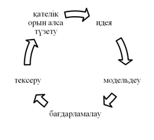
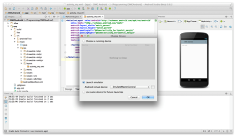

Лекциялар
Заманауи мобильді қосымшалар. Мобильді интернет және мобильді қосымшалардың тарихы. Мобильді қосымшалардың түрлері.
Соңғы онжылдықта әлем жаңа үлгідегі экономикаға тез жылжып келеді, онда оны қалыптастырудың негізгі құралы цифрлық технологиялар болып табылады. Біздің экономикамыздың бәсекеге қабілеттілігін сақтаудың кілті мемлекет пен бизнестің, оның ішінде келесі салаларда – индустриялық, көлік-логистикалық инфрақұрылым, ауыл шаруашылығы, жер қойнауын пайдалану, энергетика, білім беру және денсаулық сақтау бірлескен күш-жігерімен сандық құрамдас бөлікті дамыту болып табылады.
Қазіргі заманғы цифрлық технологиялар тез алға жылжыған соншалық, бұрын дыбысты қашықтыққа беруге арналған құрылғы ғана болған, бүгінгі күні байланыс құралдарынан басқа әмиян, кілт, журнал, фотоаппарат, видеоплеер және т. б. ретінде пайдаланылады.
Бүгін біз барлық адамдардың қол жетімділігі бар үлкен ақпараттық кеңістікте өмір сүреміз. Оның мүмкіндіктерін біз басқа адамдармен қарым-қатынас жасау үшін пайдаланамыз, әлемде болып жатқан оқиғалар туралы білеміз, өз сұрақтарыңызға жауап іздейміз.
Мобильді технологиялар заманауи өмірге берік кірді. Көптеген адамдарда әркім өз қалауы бойынша таңдай алатын мобильді қосымшаларды орнату функциясымен жабдықталған ұялы телефондар бар. Бұл ретте әр түрлі және санаттағы қосымшалардың үлкен таңдауы ұсынылған. Бұл қосымшалардың есебі мыңдаған адамға барады, және осы қосымшалардың көптігінен қажетті, пайдалы, қызықты – сұрақ ашық.
Ұялы интернеттің тарихы 1888 жылы басталады, Генрих Герц электромагнитті радиотолқындарды жасау және табу әдісін ашқан кезден бастау алды.
1895 жылы орыс ғалымы А. С. Попов электр сигналдарын сымсыз тарату үшін Электромагниттік толқындарды пайдалануға арналған баяндама жасады және 1896 жылдың наурыз айында ол эксперимент өткізді, онда 250 метрге екі сөзден тұратын "Генрих Герц" радиограмма берді. Бірнеше жылдан кейін, Ғалым басшылығымен Кронштадта қабылдаушы және таратушы аппаратураны шығару жолға қойылды. Жаңа өнертабысқа А. С. Поповтың сызбасын сәл күрделене отырып, Англияда осындай құрылғыны патенттеген кәсіпкер итальяндық Г. Маркони қызығушылық танытты. Кейіннен Англиядағы әскери қажеттіліктер үшін "Маркони" компаниясы ұйымдастырылды.
Сымсыз байланыс тарихы 1901 жылы, "Маркони" ағылшын компаниясы сигналдарды Англиядағы Польдю станциясынан Ньюфаунлендтағы Сент-Джонс станциясына беруге қол жеткізгенде басталады. Компанияның өзі жиырмасыншы ғасырдың басында сымды қалааралық және халықаралық байланысты жүзеге асырған жалғызболды.
Мобильді қосымшалардың санаттары
- Бағдарламалар оқиғалар
- Қызмет бағдарламалары
- Ойын-сауық қосымшалары
- Интернет-дүкендер
- Бизнес-қосымшалар
- Контенттік қолданбалар
- Қарым-қатынас қосымшалары
- Жүйелік қосымшалар және т. б.
Мобильді қосымшалар рейтингі
2012 жылдың 6 наурызында Google компанияның барлық ұялы дүкендерін біріктірген Google Play-дің іске қосылғанын жариялады. Содан бері бірнеше жыл өтті және осы уақыт ішінде Google Play жүктеу саны қатты өсті. Google Play-де көптеген пайдалы және пайдасыз қосымшаларды табуға болады. Дүкенде ақылы және тегін бағдарламалар бар. Қазір Google Play Android үшін 3 миллион қолданба бар. 145-тен астам елдің пайдаланушылары қосымшаны сатып ала алады.
App Annie аналитикалық компаниясы Google Play жұмыс істеген барлық уақыт ішінде деректерді зерделеп, қандай қосымшалар ең танымал болғанын анықтады. Мәселен, Google жұмыс істеген уақытта ең көп жүктеу келесі қосымшаларда болды:
- Фейсбук
- whatsapp
- Facebook Мессенджері
- Instagram
- Clean Master
- Skype
- LINE
- Viber
- Twitter
Кроссплатформа. Кроссплатформалы және нативті өңдеу. Кроссплатфорлы әзірлеудің артықшылықтары.
Кросс-платформалық немесе платформааралық – бұл бағдарламалық қамтамасыз етудің екі және одан да көп аппараттық платформалармен және (немесе) операциялық жүйелермен жұмыс істеу қабілеті. Әр түрлі платформаларға арналған шартты компиляцияны, компиляцияны және кодты орындауды қолдайтын жоғары деңгейлі бағдарламалау тілдерін, әзірлеу және орындау ортасын пайдалану арқылы қамтамасыз етіледі. Типтік мысал Linux және Windows операциялық жүйелерінде бір уақытта жұмыс істеуге арналған бағдарламалық қамтамасыз ету болып табылады. Кроссплатформалы деп қазіргі заманғы жоғары деңгейлі бағдарламалау тілдерінің көпшілігін атауға болады. Мысалы, C, С++, Free Pascal, FreeBASIC, PureBasic — компиляция деңгейінде кроссплатформа тілдері, яғни осы тілдер үшін түрлі платформалар астында компиляторлар бар.Стандартталған орындау ортасының кітапханаларының кроссплатформалық үшін маңызы кем емес. Атап айтқанда, Си тілінің кітапханасы стандарт болды (POSIX қараңыз). Ірі кроссплатфорлы кітапханалардан — Qt, GTK+, FLTK, STL, Boost, OpenGL, SDL, OpenAL, OpenCL ды атап өтуге болады. PHP, Perl, Python, Tcl және Ruby — кроссплатформалы интерпретацияланатын тілдер, олардың интерпретаторлары көптеген платформалар үшін бар. Сонымен қатар, олардың кірісіндегі бастапқы мәтін емес, аралық код беріледі. Сондықтан ActionScript, Java және C# жазылған бағдарламаларды алдын ала қайта қалпына келтірусіз түрлі амалдар жүйесіне іске қосуға болады.
Кроссплатфорлы және нативті өңдеу
Нативті әзірлеу деп мобильді операциялық жүйесінің оригиналды тілдері мен құралдарын қолдануды айтады. IOS үшін қосымшалар XCode әзірлеу ортасында Objective-C, Swift, C және С++тілдерінде жасалады. Android қолданбаларын жасау үшін Android Studio ортасы және Java тілі қолданылады. Әрбір өңдеу ортасы кодты жазу, интерфейсті жобалау, баптау, профильдеу (мониторинг) және қосымшаларды құрастыру үшін тұтас утилит кешенін қамтиды. Орта және утилит жиынтығы әрбір мобильді операциялық жүйе үшін арнайы құрылған және Мобильді қосымшаларды әзірлеудің барынша ыңғайлы және қуатты құралдары болып табылады.
Кроссплатформалы қосымша JavaScript тілінің негізінде қосымша жасау үшін арнайы утилиталарды (фреймворкаларды) пайдалануды білдіреді. Қолданушының барлық құрылымы мен логикасы JavaScript-те осындай құралдардың көмегімен (PhoneGap, Titanium, Xamarin, Cordova және т.б.) жасалады, содан кейін нативті іске қосу элементіне айналады, яғни XCode немесе Android Studio үшін базалық жобаға интеграцияланады. Бұл бір логикамен бірнеше операциялық жүйемен жобаны құрастыруды бірден жасауға мүмкіндік береді. Яғни, кроссплатформалы қосымшалар – Android және iOS-та әзірленетін және одан кейін жұмыс істейтін қосымшалар. Сонымен қатар, бұл жүйенің негізгі мақсаты-мобильді құрылғыға түсінікті, яғни, қолданушының бастапқы коды нативті, яғни нақты ұялы құрылғыға аударылады. Нәтижесінде бағдарлама онда орнатылған операциялық жүйемен өзара әрекеттесуі мүмкін.
MS Word, Skype, пошта агенттері, күнтізбелер-үстелдегі операциялық жүйеге арналған нативті әзірленген қосымшалар. Браузерде болып жатқан барлық нәрсе (сайттар, мәтін және графика онлайн-редакторлары, әлеуметтік желілер, чаттар, форумдар) – кроссплатформалық технологиялар.
Кроссплатформалық әзірлеудің артықшылықтары
Кроссплатформалық тәсіл келесі оң сәттерге ие:
Бірнеше платформаларда қосымшаны жүзеге асыру үшін аз ресурстар қажет. Бұл, шын мәнінде, кроссплатформалық тәсілдің ерекшелігі – бір тек бір код iOS-та және Android-та жұмыс істейді. Жобамен айналысатын программистер дәл екі есе аз қажет. Дизайнер тек бір графика жиынтығын жасайды. Осының барлығы жұмыс сағаттарының санын және жоба бюджетін азайтады. Интерфейстің бірегей элементтері мен технологиялардың болмауы есебінен, қарапайым өнімдерді жасау уақыты, әдетте, аз.
Өнімді жаңартудың жеңілдетілген циклі. Егер жобаға қандай да бір өзгерісті қосу немесе түзету қажет болса, бұл жоба қолданылатын барлық платформалар үшін бірден жасалады.
Сайттың ұялы нұсқасын пайдалану мүмкіндігі. Көптеген кроссплатформалық шешімдер JavaScript тілдерін пайдаланады.Сондықтан, егер сізде сайттың мобильді нұсқасы болса, кодтың және материалдардың едәуір бөлігі қосымшада өзгеріссіз пайдаланылуы мүмкін. Қосымшаның бірыңғай логикасын пайдалану. Қосымшаның жұмысына қойылған логика барлық платформаларға бірдей кепілдік беріледі.
Нативті әзірлеудің артықшылықтары
IOS және Android-тарға арналған технологиялар мен тілдерде қосымшаны әзірлеудің келесі оң сәттері бар:
1. Қосымшаның жұмыс жылдамдығы.
Қосымша әзірлеудің түпнұсқалық құралдарын (XCode, Android Studio) пайдалана отырып жасалатындықтан, жобаны компиляциялау нәтижесінде алынатын код берілген платформа үшін оңтайлы болып табылады. Қолданба құрылғыға толық аппараттық қолдау алады (сол бейнелерді өңдеу жеке процессормен жүзеге асырылады, бұл үшін арнайы арналған – GPU), күрделі тапсырмаларды жүзеге асыру үшін көпағындылық және контентті жүктеу фоны пайдаланады. Қосымшаны әзірлеу процесінде бағдарламашылар код учаскілерінің барлығының жұмыс жылдамдығын өлшеуге және қажет болған кезде оларды оңтайландыруға мүмкіндігі бар. Олардың иелігінде жедел жадыны пайдалану мониторингі, ықтимал ағып кетулер мен т. б. іздеу құралдары бар.
2. Іске асырудағы икемділік.
Интерфейс құру кезіндегі шектеулерден және жобаларды платформалық құрастыруға арналған визуалды эффектілердің күрделілігімен салыстырғанда, жергілікті дамуда сіз осы немесе басқа мобильді операциялық жүйенің технологиялары жасай алатын барлық нәрсені жүзеге асыра аласыз.
3. Соңғы технологияны қолдану
Құрылғы мен амалдық жүйенің өндірушілері ұсынатын жаңа бағдарламалық және аппараттық мүмкіндіктер тиісті жаңартулар шыққаннан кейін бірден іске қосылады
Мобильді қосымшалардың конструкторлары және мобильді қосымшаларды әзірлеу ортасы
Негізгі ұғымдар
• Мобильді қосымша – мобильное приложение – mobile application
• Мобильді қосымшаның конструкторы – конструктор мобильных приложений – mobile application designer
• Мобильді қосымшаларды әзірлеу ортасы – среда разработки мобильных приложений– mobile application development environment
Мобильді интернет аудиториясы үнемі өсіп келеді. Қолданушылар интернетті қолдану үшін, смартфонды көбірек пайдаланады екен. Статистика бойынша, смартфондарды қолданушылар уақытының 80%-ын түрлі қосымшаларға жұмсайды. Мобильді қосымшалар – мобильді құрылғыларға арналған программалық қамтамасыз етілімдер. Мобильді қосымшалар арқылы қолданушылар тауарлар мен қызметтерге тапсырыс береді, жаңалықтан хабардар болады, өзіне тура және ыңғайлы жол табады, шаруа шешеді. Көптеген ғалымдар: «Мобильді қосымшаларды қолданатын адамдардың саны әрі қарай да өседі», – деп пайымдайды. Біріншіден, смартфондар жылдамдықты қамтамасыз етеді, бұл қолданушылар үшін маңызды. Екіншіден, қолдануға ыңғайлы. Үшіншіден, үнемі мобильді технологияға негізделген жаңа модельдер пайда болады. Болашақ клиенттермен бөлісудің ең жақсы тәсілдерінің бірі – мобильді құрылғыларға арналған қосымша жасау.
Мобильді қосымшаларды жасау үшін, дайын элементтерден өз қосымшаңды жинай алатындай арнайы сайт қолданылады. Сондай-ақ программаның кіріктірілген ортасы пайдаланылуы мүмкін.
Мобильді қосымшалардың конструкторы
Кез келген адам өзіне қажетті мобильді қосымшаны «желімдеп» алатындай ақылы конструктор-платформалар бар.
Мобильді қосымшаларды жасауға арналған платформалар функциялардың жиынтығы, бағалары, сондай-ақ қосымшаны жасауға болатын тәсілдері жағынан бір-бірінен айырмашылығы бар.
Қосымшаны жасау тәсілі бойынша олар былай бөлінеді:
• Генераторлар. Бұл – қолданыстағы web-беттердің негізінде мобильді
қосымшаны жасайтын платформалар. Генераторға өз сайтыңның URL-ін бересің, ол автоматты түрде сенің сайтыңдағыдай бөлімдер мен контенті бар мобильді қосымшаны жасайды.
• Конструкторлар. Бұл – дайын элементтерден өзіңе қосымшаны жинауға мүмкіндік беретін платформалар. Оның контентін болашақ қолданушыларың жасайды. Сенің қарамағыңда дайын үлгілер мен интерфейс элементтері, сондай- ақ функционалдылықтың бөліктері, мысалы, геопозициялау, хабарламаларды жіберу, банк карталарымен жұмыс істеу, т.б. болады.
Осы платформаларды жасай алатын екі түрлі қосымша бар:
• Гибридті (PWA). Бұл, шын мәнінде, web-ке ұқсас, мобильді құрылғы экранына бейімделген web-қосымшалар. Олар смартфонда браузердің көмегімен ашылады.
• Нативті. Бұл – мобильді құрылғының операциялық жүйесіне орнатылатын қосымшалар. Нативті қосымшалар қолданушыға әлдеқайда ыңғайлы және кәсіпкерлер үшін тиімді.
Қосымшаны жасау тегін болуы мүмкін, есесіне одан кейін сенде екі жол бар. Біріншіден, сервистен оның түпнұсқасын сатып алып, оларды өз бетіңше сүйемелдеп, қосымшаны тарата аласың. Сонымен қатар ақылы негізде жазыла аласың. Содан кейін сайт командасы қосымшаны App Store/Google Play-де өзі жариялап, онымен қолдау жұмысын жүргізеді.
Қолдау төлемінен басқа, App Store немесе Google Play-де аккаунт сатып алуға тура келеді. Шығыныңның орнын өтеу үшін, көптеген платформалардың текқосымшаны жасауға ғана емес, сондай-ақ жарнамаларды қосу арқылы ақша табуға мүмкіндік беретін міндетті программалары бар.
Мобильді қосымшаларды құру процесі
Ақпараттық ресурстар, жүйелер мен технологиялар қазіргі заманғы адам қызметінің ажырамас, тез дамып келе жатқан элементтері болып табылады. 1997 жылы WAP (Wireless Application Protocol - Сымсыз қолданба хаттамаcы) технологиясы ұялы байланыс нарығында пайда болды, ол компьютерге қосылу үшін арналған кабельді пайдаланбастан ұялы телефондарға тікелей ғаламтордан бағдарламаларды орнатуға мүмкіндік берді. Содан бері қоғамның «мобильдендіру» процесі басталды. 2000-жылдардың басында мобильді қосымшаларды телефондармен үлкен сенсорлық экрандармен дамыту мобильді қосымшаларды жасауда сапалы қимылмен жаңа деңгейдегі мобильді қосымшаларды жасауға мүмкіндік берді. 2010-шы жылдардан бастап мобильді құрылғылары қосымшаларды дамыту үшін заманауи ақпараттық технологияларды қолдануға мүмкіндік беретін аса қуатты процессорлармен жабдықталған. Көптеген бағдарламашылар кәсіби қызметтің жаңа бағыттарын үйреніп, нарықтық үрдістерге бейімделе бастады.
Қазіргі уақытта мобильді қосымшаларды әзірлеу ақпараттық технологиялар саласындағы ең танымал іс-әрекеттердің бірі болып табылады.Мобилді қосымшаларды құрастыру тұтынушылық қажеттілікті алдын ала орындауға мүмкіндігі бар шешімі қолданушыға белгісіз алгоритмдер мен тапсырмаларды орындауға негізделген.
Мобильді қосымша - белгілі бір тұтынушылар тобына арналып құрастырылып, олардың қандай да бір мәселелері мен қиындығын шешуге бағытталған. Мобильді қосымша - нақты платформаға орнатылған, белгілі бір әрекеттерді шешуге болатын функционалдығы бар арнайы бағдарлама. Бұл әртүрлі ақпаратпен өзара әрекеттесуге көмектесетін жүйенің бір түрі. Осыған байланысты мынадай түрлерге жіктеледі:
- қосымша-оқиға: әртүрлі іс-шараларды, оқиғаларды көрсетуге мүмкіндік береді, мысалы, спорттық, мәдени, білім-ғылымға қатысты орын алған оқиғаның көрсетілімі және т.б.;
- қызметтік қосымша: ұйымдардың қызметін көрсететін сайттарға ұқсас сервистік қосымшалар;
- үйретуге, дамытуға арналған әртүрлі ойындарға арналған қосымшалар;
- онлайн режимде сатылым жасауға арналған интернет дүкендер;
- әртүрлі брендтерді жарнамалауға қолданылатын промо-қосымшалар;
- бизнес-қосымша: ұйымның үдерісін оңтайландыруға, бизнес ақпаратқа қол жетімділікті қамтамасыз етуге және деректер базасымен біріктіруге мүмкіндік береді;
- жүйелік қосымша: телефон мен оның бағдарламалық жасақтамасы үшін кеңейтілген параметрлер мен опцияларды пайдалану;
- телефонды толық навигатор ретінде пайдалануға мүмкіндік беретін GPS модулін пайдаланатын шарлау және іздеу қызметтері бар қосымща;
- бейне және аудио ақпаратпен жұмыс істеу кезінде телефонның мүмкіндігін кеңейтетін мультимедиалық бағдарламаладағы қосымшалар;
- әлеуметтік желілер, байланыс үшін онлайн қызметтер, ақпарат таратуы және әлеуметтік қатынастарды ұйымдастырушы қосымшалар;
- контенттік қосымшалар және т.б.
Әрбір құрастырылатын қосымшалар қолданылуы ортасы мен пайдалану мақсатында әртүрлі және құрастырылу әдіснамаларыда үнемі өзгеріп отырады, бірақ бұл мобильді қосымшаларды әзірлеу мен бағдарламалау кезіндегі процесс стандартты келеді. Мобильді қосымшаларды әзірлеу процесін шиыршықталған түрде бейнелеуге болады (1-сурет).

Сурет 1. Мобильді қосымшаны әзірлеу процесі
Осы процеске жеке-жеке тоқталып өтсек:
Идея
Кез келген құрастырылған қосымшалар болсын, дайын бағдарламалық өнім болсын ең алдымен идея ретінде басталады. Егер бағдарламалық өнім немесе мобильді қосымша құру идеясы жоқ болса, онда мұндай жұмысты бастаудың тиімдісі проблемалар және әлеуетті шешімдер тұрғысынан заттарды ойлауға даярлау болып табылады. Егерде белгілі бір жағдайларға байланысты туынған мәселелерге қызығушылық танытып, «бұл мәселенің туындауына не себеп?» «бұл мәселені шешудің жақсы жолы бар ма?» деген секілді сұрақтар арқылы мәселелер мен нарықтық тиімсіздікті анықталса, онда идеяның жартысына қол жеткізгендік болып табылады.
Келесіде бұл мәселенің неліктен екенін түсіну және бұрын соңды бұл мәселе бойынша қосымша жасалғаны жөнінде ақпарат іздестіру. Мәселе кеңістігіне мүмкіндігінше көп зерттеу жүргізу. Мәселені толық түсінгеннен кейін, мобильді қосымша мәселені қалай шеше алатынын бағалауды бастау.
Модельдеу
Бұл кезеңде алдымен қосымшаның ақпараттық архитектурасын жобалап алған жөн. Ақпараттық архитектура - бұл қосымшада қандай деректер мен функцияларды ұсыну керектігін және осы деректер мен функциялардың қалай ұйымдастырылғандығын анықтайтын процесс. Әдетте, бұл процесті бағдарламаны орындауда қатысатын функциялардың тізімін және қосымшада қандай жерде көрсетілетінін көрсету арқылы басталады. Бұл қосымшаны модельдеу кезіндегі сұлбаның негізгі құрастырушы блогы болып саналады. Әрі қарай қосымшаның терезесін жасауды және әр функцияларды және деректерді тағайындауды бастау қажет. Осы орайда әр нысанның өз орны бар екеніне көз жеткізу керек.
Пайдаланушылар қосымшамен жұмыс істеу кезіндегі қолайсыздық болған жағдайларға алдын ала талдау жасап шығу қажет. Қосымшада әрбір нысан мен мәзірлер ішіндегі орын алатын click-термен бастапқы бетке ауысу немесе кез келген беттен іс-әрекетті аяқтау үшін қанша click қажет екенін көргіңіз келетін нәрселердің әрқайсысын қарастыру керек. Бұл жердегі click –нысанды басу, шерту дегенді білдіреді.Әрбір басудың интуитивті екенін тексерген жөн. Егер қандай да бір әрекетті жасау үшін бір реттік шерту болса, онда ол қолданушыға ыңғайлы, бірақ жалпы тапсырмаларды орындау үшін бірнеше рет шерту ұсынылмайды.
Келесі қадам – шерту арқылы ауысу моделі. Шерту арқылы ауысу моделі жұмыс үрдістеріңізбен қосымша жобасын тексеруге көмегін тигізеді. Олар негізінен қосымшаның интерфейсін телефон арқылы сынақтан өткізу үшін шынайы тестілеу әдісі болып табылады. Мысалы, тұтынушылар жай телефон арқылы қосымша ашылған кезде олардың шеңберінен шығуға мүмкіндік беретін сілтеме алады. Қосымша қазірде ешқандай функционалдық болмаса да, олар қосымшаның әр бетін шертуге және бағдарламаның шарлауын бастайды. Бұл қадамда қиындықтар туындағанда қосымшаның сұлбасына өзгертулер енгізу керек.
Стиль нұсқаулықтары - бұл бағдарламаның дизайнының құрылыстық блоктарына негізделген. Дыбыс стилі нұсқаулығы қолданбаны қолдануда өте пайдалы болады.Бірыңғай дизайн тілінің арқасында пайдаланушылар қосымшаны пайдалануда өзін ыңғайлы сезінеді. Өйткені мобильді қосымшаның «өмір сүру» ұзақтығына да оның жасалған дизайны әсерін тигізеді.
Мобильді қосымшаларды құру процесі
Бағдарламалау
Жоғары деңгейдегі техникалық жобалау. Ұялы қосымшаны жасау үшін қолданылатын көптеген тәсілдер, технологиялар және бағдарламалау тілдері бар. Олардың әрқайсысы өзінің күшті және әлсіз жақтары бар. Олардың кейбіреулері пайдалануға арзан болуы мүмкін, бірақ өнімділігі төмен, ал басқалары көп уақытты қажет етеді және сапалы, кәсіби түрде болады. Қосымшаны құрудағы ең нашар мүмкіндік - сенімсіз технологиялық стэкті пайдалану, қазіргі таңда мұндай қызмет түрі өте көп. Яғни ешқандай бағдарламалық кодтаусыз-ақ дайын шаблондар арқылы әртүрлі тақырыпта қосымшалар құруға болады[6]. Алайда мұндай дайын шаблондары бар программалармен құрылған қосымшалардың кері тұстары көп: толыққанды басқарудың жоқтығы, берілген дизайнге тәуелділілік, шектеулі интерфейстер және т.б.
Сонымен қатар, мобильді қосымшаларды бағдарламау кезінде Front-end және Back-end жобалау жүйесі бар.
• Frond-end жобалау - бұл тұтынушы бөлігінің қосымшасын жобалау. Басқаша айтқанда, бұл пайдаланушы мен сервердің қосымша арасындағы интерфейсін құрастыру. Ол пайдаланушының қандай да бір деректерді енгізуін, сондай-ақ оның бастапқы өңдеуін және тиісті API (application programming interface-қосымшаны бағдарламалау интерфейсі) арқылы серверге жіберуді жүзеге асырады.
• Back-end жобалау - бұл пайдаланушылардың немесе ресурстардың арасында деректерді беру үшін жауап беретін қосымшаның сервер жағының дамуы.Төменде кодты жазуды бастамас бұрын ескеру қажет бірнеше нәрселер бар:
- Программалау тілдері - API жасау үшін қолдануға болатын ондаған тілдер бар. Ең жиі қолданылатын тілдер Java, C#, Javascript, PHP және Python.
- Мәліметтер қоры - қазіргі заманғы дерекқорлардың екі негізгі түрі бар. SQL және noSQL. SQL барлық жағдайларда дәстүрлі және жақсы таңдау ретінде саналады. Жалпы SQL нұсқаларын MSSQL, MYSQL және PostgreSQL қамтиды.
- Хостинг ортасы (Инфрақұрылым) - бұл қадамда API және дерекқордың қайда және қалай орналастырылатынын шешу қажет. Мұнда қабылданған шешімдер хостинг шығындарын, масштабталуын, орындалуын және өтінімінің сенімділігін анықтауға көмектеседі. Жалпы хостинг- провайдерлерге Amazon AWS және Rackspace кіреді. Провайдерді таңдаудан тыс, жүйенің қаншалықты кеңейтілетінін жоспарлау қажет. Бұлтқа негізделген шешімдер ресурстарды пайдалы деп санап, қажет болғанда жоғары және төмен қарай ауқымды түрде төлеуге мүмкіндік береді. Олар сондай-ақ дерекқор сақтық көшірмелерін, сервердің жұмыс уақытын және операциялық жүйенің жаңартуларын жасауға көмектеседі.
Түпнұсқалық (native) қосымшалар - белгілі бір платформаға арналған бағдарламалау тілдерінде жазылған және операциялық жүйеге кіріктірілген, тез және дұрыс жұмыс жасайды және басқа мобильді қосымшалардың функционалдығы мен жылдамдығының артықшылығына ие. Олар осы платформа үшін ең қарапайым түрде бағдарламаның интерфейсі мен жалпы іс-әрекетін жүзеге асыруға мүмкіндік береді. Сонымен қатар, қосымшалар аппараттық құралдарға қол жетімді: бейне камера, микрофон, акселерометр, телефон кітапшасы және т.б. Әрине бұлар бағдарламаны жазу кезінде көп уақытты қажет етеді, мұндай кезде бағдарламаушының құрастыру ортасында арнайы білімі болуы қажет, сондай-ақ әр платформаның өзінің жеке бағдарламалары болғандықтан үлкен бағаны да талап етеді. Мұндай қосымшаларда өзіне тән құралдары мен бағдарламалау тілдері бар. Мысалы, Android операциялық жүйесіне арналған бағдарлама жазу үшін көбіне Android Studio, Java тілі қолданылады, ал iOS үшін Xcode және Objective-C, сонымен қатар соңғы кезде көп танымалдыққа ие болып келе жатқан Swit қолданылады, Windows Phone үшін Visual Studio және C# программалау тілдері қолданылады. Кейде бірнеше платформада жұмыс жасауға мүмкіндігі бар, native қосымшалардан бөлек қысқа мерзімде қосымша құруға тура келетін жағдайлар болады. Мұндай кезде, гибридті немесе веб- қосымшалар таңдалынады, ал құрастыру үшін кроссплатформалы мобильді фреймворктар қолданылады.
Веб-қосымшаларды сайттың мобильді нұсқасы деп атауға болады, мұндай қосымшалардың кеңейтілген интерфейсі бар. Бұлар арнайы дүкендерде орналаспайды, тек браузер жұмысы үшін қолданылады. Осындай қосымшалардың жұмыс жылдамдығы ғаламтор байланысына тәуелді, сонымен қатар, жылдам құрастырылуы мен төмен бағаға ие. Кроссплатформалы болып саналатын стандартты мынадай веб-технологиялар қолданылады: HTML5, JavaScript және CSS.
Мобильді қосымшаларды құрастырудың заманауи технологиясы дамып, кешенді түрде қолданып келе жатыр. Технологияның қарыштаған заманында күн сайын мыңдаған мобильді қосымшалар құрастырылып, Google Play және Apple App Stores-қа жарияланып, кең қолданысқа шығуда. Бұл мобильді қосымшалардың ең көп тарағандары әртүрлі ойындар мен қарым-қатынас жасауға арналған әлеуметтік желілер және көптеген электрондық коммерциялық қосымшаларды атауға болады. Барлық қосымшалар, егер кәсіби түрде құрастырылса, мобильді қосымшалар адам өміріндегі күнделікті іс- әрекетін жеңілдету үрдісіне пайдасы мол болмақ.
Android операциялық жүйесі
Мобильдік қосымша бұл бағдарлама арнайы смартфондар және де басқа мобильдік құрылғыларды қамтамасыз етуге негізделген. Ең алғашқы мобильді құрылғылар телефондағы контактілер тізімін реттеуге және қызметке хабарлама жіберуді/қабылдауды орындады. Ерекшеліктері:
- графикалық және видеоақпараттарды хабарлама арқылы жіберу ұзақтығы шектеусіз
- қосымша қозғалысының ыңғайлылығы
- қосымшада деректер жинау ыңғайлы(орналысқан жері,тілі және тағы басқа)
- интерактивті мүмкіндіктері шексіз
Мобильді қосымша интернеттен жүктеу мобильді қосымша интерактивті процеске қатысушыларды тартып қана қоймай, және жарнама ортасы да бола алады. Мобильді қосымшаларды құруға арналған программалық жабдықтарға тоқталайық.
Мобильді қосымша құру кезінде басты мына операциялық жүйелер қолданылды: Android, iOS, BlackBerry, HP webOS, Symbian OS, Windows Mobile және т.б. Қазіргі уақытта Android мобильдік қосымшаны әзірлеу, қарқынды дамып келе жатқан бағдарламалардың бірі болып табылады. Android операциялық жүйесі көптеген смартфондарда орнатылған, ондай смартфондарға: Samsung, Motorola, Sony, LG, Lenovo және т.б. Қазіргі заманда өзекті мәселелердің бірі ғаламтор - бағдарламалары тез дамып жатыр.
Android— ықшамды операциялық жүйе. Ол Linux ядросының негізінде жасалған және коммуникаторлар, планшетті компьютерлерге, санды ойнатқыштарға, қолсағаттарға арнап жасалынған. Алғашында бұны Android Inc. компаниясы жасап жатқанды, кейіннен бұл компанияны Google сатып алды. Содан кейін Google қазіргі кезде осы платформаның дамуына ат салысып жүрген Open Handset Alliance (OHA) альянсын құруға ынта білдірді. Android Google кітапхана арқылы жасалынған басқару құрылғысымен Java-қолданбалар жасауға мүмкіндік береді. Android Native Development Kit Си және де басқа да бағдарламалау тілінде жазылған қолданбаларды жасай алады.
Android – операциялық жүйесі коммуникаторларға, планшеттарға, цифрлық ойнатқыштарға, цифрлық фоторамкаларға, қолға киетін сағаттарға, нетбук және смартбуктарға, Linux ядросында жасалған операциялық жүйе орнатылған. Бағдарламаларды өңдеудегі негізгі тілдердің бірі Java. Бағдарламаны жасау үшін Eclipse ортасын қолданамыз, AndroidSDK мобильдік құрылысы SDK эмуляторы арқылы іске асады. Java объектісіне негізделген тіл. Бірінші орында ол қолданушыға жеңіл әрекеттестікті көрсетеді.
Android платформасы үшін қосымшаның бағдарламалау тілі – Java. Бірақ олар классикалық Java VM-де емес, ерекше Dalvik виртуалды машинада жасалынады.
Android үшін әрбір қосымша Dalvik машинасының ішінде бөлек процессте функцияланады. Жады мен басқару процесстеріне барлық жауапкершілік Android-қа негізделген. ол ресурстарды босату керек болса процесстерді тоқтатады немесе өлтіреді.Dalvik пен Android Linux ядросының шыңында орналасқан. Ол драйверлер мен жадыны басқару жұмысын қоса, аппараттық қамтамасыз етумен төмеңгі деңгейлі байланыспен айналысады.
Android жүйесінде қосымша құру ретін қарастырайық. Android Project Wizard (Android жобалар мастері) Android қосымшаға керекті файлдардың барлығын құрады. Жаңа жоба құру үшін Eclipse қосамыз және келесі амалдарды жүзеге асырамыз:
1. File-New-Android Project (Файл -Жаңа -Андроид жоба) командасын орындаймыз немесе «а» әрпі бар бума сурет түріндегі андроид жоба құру белгішесін басамыз және Eclipse құрал-саймандар панеліндегі «қосу » таңбасын қосамыз.
2. Жоба атын береміз
3. Жоба сақталатын орынды таңдаймыз. Бұл жоба болғандықтан ауыстырып қосқышты Create new project in workspace күйіне қоямыз.Use default location жалаушасын қоямыз.
4. Жаңа қосымша үшін тұғырнама нұсқасын таңдаймыз.
5. Қосымша атын береміз.Біздің жағдайымызда ICE(Independent education class) деп атаймыз.
6. Java стандарттық пакетінің аттар кеңістігінің талаптарын қанағаттандыратындай пакет атауын береміз. Бұл жобадағы барлық кодтар com.example* атаулар кеңістігінің талаптарына сай келетін болғандықтан com.example.iec атын беруге болады.
7. Create Activity жалаушасына назар аудараңыз. Ол Activity қосу класын құруға болады.
8. Min SDK Version енгізу өрісінің мәндерінің дұрыстығына назар аударыңыз.Бұл өрісте API-дің минимальды рұқсат етілетін нұсқасын көрсетеміз
9. Next батырмасын басамыз.
10. Finish батырмасын басамыз.
Android –Java бағдарламалану интерфейсіне ие Linuxқа негізделген тегін операциялық жүйе. Androi, OpenGL кітапханасын пайдалана отырып, 2D және 3D-графикасын ұстанады, сонымен қатар деректерді SQLite деректер қорында сақтайды.Әр Android-қосымшасы өзінің меншікті процесінде қосылады.
Android жүйесінің негізгі мүмкіндіктеріне тоқталайық:
Activity (Белсенділік, Қызмет) — Activity классымен ұсынылған және XML-файл түрінде белгіленген қолдану инерфейсы экранын ұсынады.(белгіленуді бағдарламалау арқылы да жасауға болады, бірақ қазір олай жасамайды). Android-қосымшасы бірнеше формадан тұруы мүмкін және қосымшаларды орындауда өзара қосылыса алады.
Intents (Намерения) — асинхрондық хабарлама, бұл дегеніміз басқа қызметтерден функция алу мүмкіншілігін тудырады. Қосымша қызметке тікелей сұраныс жасай алады немесе Android-тан тіркелген қызметтер сұрай алады.Мысалы, қосымша, Internet арқылы деректер алу үшін немесе браузерді қосу үшін сұрауы мүмкін.
Views (Представление, Түр, Басқару элементі, Компонент) —виджеттермен класс құратын қолданыс интерфейсі. Бұлар өзімізге таныс басқару элементтері: кнопкалар, мәтін кеңістігі, жалаушалар, қосқыштар және т.б.
Services (Қызметтер) — қолданыс интерфейсын қолданбай фондық талаптарды орындай алады. (мысалы, әуенді ойнату). Олар қолданушыны Android ескерту жүйесі арқылы ескертіп отырады.
Content Provider (Контент-провайдерлері) —қосымшаларға деректерді контент-провайдер арқылы жеткізеді. Сіздің қосымшаңыз басқа қосымшалармен дерек алмаса алады.
Broadcast Receiver (Хабарламаларды кеңінен тарататын қабылдағыштар) — жүйелік хабарламаларды қабылдайды, жүйе жағдайының өзгеруіне де әсер ете алады. Қосымша белгілі бір анықталған қабылдағыш ретінде де тіркеле алады, егер ондай хабарлама болған жағдайда ғана қосыла алады.

1-сурет-Android жүйесінің негізгі интерфейстері
Егер сіз өзіңіз Android басқармасын пайдалана отырып телефондарға қосымшалар ойлап тапқыңыз келсе, онда сізге жақсылап дайындалып,жұмысқа арналған барлық аспаптарды дайындап алу қажет.
Заман талабына сәйкес ақпараты таратудың жаңа үрдісі болып отырған планшет пен смартфондар тек қана ойын – сауық кұралы ғана емес оқушылардың білім сапасының деңгейін артуына пайдалы болатынына нақ сенімдімін.
Android Studio ортасында қарапайым қосымша құру алгоритмін қарастырайық. Ол үшін алдымен осы бағдарламалау ортасының интерфейсі мен жобаның құрылымына сипаттама беріп өтейік.
Жобаның құрылымы:
• src –қосымшаның (java-класының) «бастапқы коды»;
• assets – бос директория. Raw-файлдарды сақтау үшін қолданылады.
• gen – генерациялантын жүйелі файлдардың орны. Яғни, жобада қолданылатын барлық ресурстардың идентификаторы сақталады.
• libs – қосымшада қолданылатын әртүрлі кітапханалар;
• res – жоба ресурсы;
• AndroidManifest.xml – жобаны сипаттау файлы;
• project.properties – жобаның баптауларынан тұратын файл.
Жобаның ресурстары:
• anim – анимациялық нысандарға компиляциялайтын XML файлдардан тұрады;
• color – түстерді сипаттайтын XML файлдардан тұрады;
• drawable – Drawableshapes және Drawableobjects сипаттайтын XML, 9-Patch файлы, растрлық файлдардан тұрады.
• layout – экран макетын сипаттайтын XML файлдардан тұрады;
• menu – қосымшаның менюін анықтайтын XML файлдардан тұрады;
• raw - еркін файлдарды сақтау үшін қажет;
• values – ресурстың көптеген түрлерін компиляциялайтын XML файлдардан тұрады;
Жобаны құрастыру үшін болуы қажет талаптар:
• Java Development Kit
• Android Software Development Kit
Мысал. Бір экранды (Activity) қолдану арқылы қосымша жасау [3]. Екі activity құру керек және олардың арасында бір-бірінен ауысуды ұйымдастыру керек. Алгоритмі төмендегідей жүзеге асуы қажет:
• жаңа жоба құру;
• қосымша атын жазу;
• Next – Empty activity – MainActivity – FINISH батырмасын шертеміз
• жұмыс аймағына TextViewжәне Button орналастырамыз:
o TextView – Бұл бастапқы бет;
o Button –Келесіге ауысудеген мәтіндерді жазамыз.
• Бос activity құрамыз: App – тышқанның оң жақ батырмасын шерту – New – Activity – Empty Activity – бұл құрылған activity атауы:Main2Activity
• MainActivity.java ашамыз, төмендегі кодты жазамыз:
public classMainActivity extends AppCompatActivity {
private Button b;
protected void onCreate (Bundle savedInstanceState) {
super.onCreate(savedInstanceState);
setContentView(R.layout.activity_main);
b = (Button)findViewbyId(R.id.button);
b.setOnClickListener(new View.OnClickListener () {
public void onClick(View view) {
Intent I = new Intent(packageContext: MainActivity.this, Main2Activity/class);
startActivity(i);
}
});
}
}
Android операциялық жүйесі: артықшылықтары мен кемшіліктері
Бүгінгі таңда смартфон технологиясы бізге әр түрлі ұсыныстарды таңдаудың шексіз мүмкіндіктерін ұсынады. Дегенмен, Біздің құрылғыға арналған операциялық жүйені таңдағанда, параметрлер әрқашан Google немесе Apple жүйелерінде жинақталады.
Android жүйесінің мобильді телефон үшін ең жақсы екенін білмеу оның сипаттамаларын жақсы білетіндігімізге байланысты болады, яғни артықшылықтары мен кемшіліктері ұқсас артықшылықтары бар басқа амалдық жүйелермен салыстырғанда. Бұл белгілі жүйені пайдаланудың оңтайлы және кемшіліктері бар, олар ең жақсы шешім қабылдау үшін ескерілуі керек.
Android операциялық жүйесінің артықшылықтары
Бұл амалдық жүйе басқаларға қарағанда әр түрлі артықшылықтар ұсынады, бұл нақты пайымдауды және біздің мүдделеріміз үшін ең жақсы деректерді салыстыру және жүзеге асыру үшін біз төменде келтірілген артықшылықтарды білуіміз керек.
1. Ашық ақпарат көзі
Android-тің бірінші артықшылығы, ең бастысы, ол ашық көзмен жұмыс істейді, яғни кез-келген адам қосымшалар құра алады және андроид әлемінде өзінің ұсынысын көбейтуге үлес қоса алады, олардың басым көпшілігі ақысыз.
Оның коды ашық болғаны, сонымен қатар басқа да көптеген артықшылықтарға мүмкіндік береді, мысалы, қателерді тезірек қарап, жөндеуге болатындығы және басқа артықшылықтар, біз төменде көреміз.
2. Үлкен еркіндік
Біріншісінен шығатын осы операциялық жүйені анықтайтын тағы бір жағымды ерекшелік - бұл Android әзірлеушілері барлық қосымшалардың барлық түрлерін шектеусіз және кез-келген рұқсат сұрауынсыз жұмыс істейтін жалпы еркіндік.
3. Әртүрлілік және жан-жақтылық
Жоғарыда айтылғандардың барлығына сәйкес, Android - бұл өндірушілердің көп саны бар және көптеген коммерциялық брендтерде, сондай-ақ қолданушыларда бар операциялық жүйе, бұл оны ең көп қолданылатын жүйеге айналдырады.
Осыған біз осы операциялық жүйені табуға болатын құрылғылардың әмбебаптығын қосуымыз керек, олардың арасында ұялы телефондардан, планшеттерден, ақылды сағаттардан, компьютерлерден, GPS құрылғыларынан және жаңа буын құрылғыларының барлық түрлерінен таба аламыз. қосылуға қажет технология.
4. Көп тапсырма жүйесі
Android операциялық жүйесінде сонымен қатар әр түрлі қосымшаларды бір уақытта ашып, оларды бір уақытта жұмыс істеуге мүмкіндік беретін, егер біз оларды қолданбайтын болсақ, оларды ұйқы режиміне қосуға мүмкіндік беретін көп тапсырма жүйесі бар. Мұның бәрі бізге ептілікпен жұмыс істеуге, сондай-ақ жадыны және батареяны тұтынуды үнемдеуге көмектеседі, өйткені жүйе басқалармен жұмыс істеген кезде бізге пайдалы емес қосымшаларды жабуға мүмкіндік береді.
5. Үлкен өзара әрекеттесу
Осы жүйенің мақтанышына айналған еркіндіктің арқасында оның тағы бір ерекше артықшылығы - бұл оның теңшелімінің үлкен мүмкіндігі, яғни Android қолданушылары мен өндірушілерінің өзара әрекеттесу мүмкіндігі жоғары және оларды дербес ете алатындығымен, жеке тұсқағаздарды, анимацияларды немесе тақырыптарды орнатқанды ұнатамын барлық түрлері.
Сонымен, Android арқасында біз өз талғамымызға сәйкес келетін тақырыптарды, стильдерді немесе интерфейстерді таңдай аламыз, бұл біздің құрылғыларға ерекше әсер береді.
6. Қоғамдастық
Android операциялық жүйесінің тағы бір назар аударарлық фактісі - бұл оның жасау ерекшеліктері мен оны жасаушылар арасындағы байланыс еркіндігіне негізделген дүниежүзінің жасаушылары арасындағы кері байланысты күшейтеді.
Сондықтан бұл жүйе әлемдегі ең үлкен қауымдастыққа ие, әрдайым тұрақты қозғалыста және барлық түрдегі форумдарды, ұжымдық іс-шаралар мен кездесулерді үнемі қалыптастырады.
Android операциялық жүйесінің кемшіліктері
Біз қарастырған артықшылықтардан басқа, Android жүйесінде бірқатар кемшіліктер бар, егер біз осы операциялық жүйенің сипаттамаларын терең және толық білгіміз келсе оларды ескеру қажет
1. Батареяның қызмет ету мерзімі
Android жүйесінің бірінші жетіспеушілігі және ең танымал бірі - оның көп тапсырма беру жүйесінен туындайды және бұл құрылғылардың батареясының басқа жүйелермен салыстырғанда әлдеқайда ертерек таусылатындығы және соның салдарынан әлдеқайда ертерек таусылатындығы.
Осылайша, батареяны тұтынуды үнемдеу үшін бірқатар қосымша қосымшаларды жүктеу қажет болады, сонымен қатар құрылғының жалпы жұмысын оңтайландыру қажет болады, мысалы, деректерді шамадан тыс тұтынуда.
2. Күрделілік
Тұтынушылар арасында бұл операциялық жүйе тәжірибесіз пайдаланушылар үшін қалғандарына қарағанда әлдеқайда күрделі деген жалпы түсінік қалыптасқан, өйткені оны конфигурациялау біршама күрделі, сонымен қатар жалпы түсінік бойынша интуитивті емес.
Осылайша, құрылғының жағдайын жақсарту үшін минималды білім болуы керек, бұл кейбір жағдайларда тәжірибесіз қолданушылар жүйенің кейбір элементтеріне өзгеріс енгізуге тырысуы мүмкін.
3. Кейбір қосымшалардың сапасының төмендігі
Android-тің ашық көзінен алынған тағы бір сипаттама - бұл кейбір қосымшалардың сапасының төмендігі немесе біздің командаға қажетсіз болып қалуы.
Сондықтан біз болашақта тосын сыйлардан аулақ болу үшін әрқашан өзіміз білетін және оның пайдалылығына сенімді қосымшаларды жүктеген жөн.
4. Осалдық
Ашық дереккөзге ие болу фактісі бұл жүйенің шабуылдарға тез ұшырауына және кейбір хакерлер жүйенің өзіндегі қателіктерді пайдаланып шабуыл жасауына мүмкіндік береді.
Бұл бізде Android құрылғысын алуға мүдделі болса немесе бізде бар болса, ескеру керек фактор, мүмкін антивирустың болуы мүмкін шабуылдарға қауіп төндірмеу үшін өте маңызды.
5. Жаңартуды қолдаудың болмауы
Басқа операциялық жүйелерден айырмашылығы, Android-те бізге пайдалану мен ләззат алу үшін жабдықтың ең соңғы нұсқасын алуға мүмкіндік беретін жаңарту қолдауы жоқ.
Бұл, сөзсіз, Android-тің ең тән кемшіліктерінің бірі және iOS сияқты басқа жүйелермен бәсекелестікте ол айтарлықтай жеңіліске ұшырайды.
Ақпаратқа қол жеткізу үшін мобильді технологияларды пайдалану. GPS навигаторлары, GSM сигнализациясы.
Біздің өмірімізге мобильді технологиялар енгізілгеннен кейін, бұл өндірілген процестерді де, ақпаратқа қол жеткізу процестерін де түбегейлі жақсартады. Ұтқыр мобильді технологияларды пайдалана отырып, әлемдегі оқиғалардың барлығын қадағалап отыра аламыз.Оған көп уақыт та күш-жігерде кетпейді.Бұдан басқа, мобильді технология технологиялық процестерді оңтайландыруға, өндіріс шығындарын азайтуға мүмкіндік береді.
Қазіргі заманғы кітапханалар ақпараттар мен құжаттарға сұранысты орындау қашықтық пен сұраныстағы ақпараттың орналақсан жеріне тәуелсіз, пайдаланушылардың түгеліне дерлік қолжетімді болу керек.
Мобильді технологиялар – бұл кітапхананың жаңа қызметі, тәжірбиелік біліктілік, келешек. Қазіргі заманда адамдар интернет желісіне ұялы телефондар және портативті компьютерлер көмегімен кіріп, керек ақпаратқа қол жеткізе алады.
Біздің кітапханалар wap-онлайн каталогтарына, wap-деректер базасына, wap-энциклопедияларға, виртуалды анықтама қызметіне кітапхананың wap-сайты арқылы және wap-чат немесе sms көмегімен қол жеткізуді алдыңғы қатарда болып енгізіп жатыр (мысалы, пайдаланушылар ұялы телефон арқылы кітапхана сайтына кіріп, ОҚЖ-нің электрондық каталогының іздеу қызметін пайдалана алады). Бүгінгі күннің өзінде электрондық кітаптар баспа кітаптардың шрифтін, көркемделуін және стильдерін көшіріп алуына байланысты электрондық және баспадан шыққан кітаптар бейбiт қатар өмiр сүре алады. Бұл оқырмандардардың кітаптың екі түріне де қызығушылығын еш кемітер емес.
Bluetooth, WAP, GPRS секілді байланыс түрлері ұялы телефондар көмегімен Интернеттің ақпараттық және қызмет көрсету ресурстарына қол жеткізуге мүмкіндік береді.
Мобильді Операциялық Жүйе — көп функционалды ұялы телефоннан толыққанды компьютер жасауға мүмкіндік беретін жүйе.ОЖ-ні ұялы телефондар мен коммуникаторларға олардың жұмысының сапасын жақсарту үшін орнатылады.
• Android – Linux ядросында құрылған, ұялы телефонға арналған ОЖ. Қазіргі күні Google компаниясымен біріккен Android Inc. компаниясында құрастырылған болатын.
• Bada – Samsung компаниясының Samsung Hand-Held Platform платформасында құрастырылған платформа. Айта кететін жайт, Bada-бұл ОЖ емес, ашық типтегі үлкен платформа.
• Maemo – Debian L.inux базасының негізінде жинақталған. Көбіне планшеттер мен Nokia коммуникаторларында қолданылатын протативті құрылғыларға арналған платформа. Maemo негізінде Gnome компоненттері, соның ішінде, графикалық кітапхана gtk. болып табылады.
• Palm webOS – Pre және Pixi смартфондарына арналған, Palm компаниясының экзотикалық ОЖ. Palm web OS платформасы сенсорлық экранды құрылғымен жұмыс жасауға арналған.
• Apple iOS ( бұрынғы IPhone OS) – Mac OS X негізінде құрылған Apple компаниясының ұялы телефондарына арналған ОЖ. Ол iPhone, iPod Touch және iPad –та орнатылған. Apple Ios Mach микроядросының Darwin ядросында құрылған.
• Windows Mobile – Pocket PC қосылған құрылғыларда(смартфон және коммуникаторлар) жұмыс жасайтын мобильді ОЖ.
Мобильді технологияларға арналған JAVA
• Телефонның функционалды мүмкіндігін ұлғайтуға мүмкіндік беретін жалғыз тиімді технология
• Ең танымал түрі – ойындар
• Жабдықталған процессорлар мен flash-жадтарымен қатар күнделікті тұрмысқа 3D ойындары келді
• Корпоративті үстелдік дербес компьютерлердің 97%-ы Java қосымшасын қолданады;
• АҚШ-та үстелдік дербес компьтерлердің 89%-ы Java қосымшасын қолданады;
• Әлемде Java-ның 9 млн өндірушілері бар;
• Java өндірушілер арасында нөмір 1;
• Java-ны 3 млрд мобильді телефондар қолданады;
• 5 млн Java Card-тар қолданылады
• Java 125 млн теледидар құрылғыларында қолданылады
Java ішінде технологиялардың бірнеше негізгі топтары бар. Олар:
• Java SE — Java Standard Edition, Java негізгі басылымы, API, Java Runtime Environment компиляторлары бар; қолданушылық қосымшалар жасауға келтірілген, ең алдымен — үстелдік жүйелер.
• Java EE — Java Enterprise Edition, кәсіпорын деңгейіндегі бағдарламалық жабдықтамалар жасауға арналған арнайы құралдар жиыны болып табылады.
• Java ME — Java Micro Edition, есептеуіш қабілеттері шектелген құрылғыларда қолдануға арналған, мысалы ұялы телефондар, қалталық дербес компьютерлар, кіріктірме жүйелер.
• JavaFX — Java эволюциясының Rich Client Platform ретіндегі келесі қадам технологияся; бірлестіктің қосымшалары мен бизнестың графикалық интерфейстерін жасауға арналған.
• Java Card — смарт-карталар мен жад көлемі мен өңдеу қабілеті өте шектеулі басқа да құрылғалырда жұмыс істейтін қосымшалардың қауіпсіз ортасын құратын технология.
GPS навигаторлары
GPS (ағылш. Global Positioning System — жаһандық позициялау жүйесі, Джи Пи Эс деп оқылады) — аралықты, уақытты және орналасу нүктесін анықтауға арналған навигацияның жерсеріктік жүйесі. Жердің кез келген жерінде (полярлық аумақты қоспағанда), кез келген ауа-райында, сонымен қатар ғаламшардың ғарыштықаймағында нысанның орны мен жүру жылдамдығын анықтап бере алады. Жүйені АҚШ Қорғаныс министрлігі жасаған. Жүйені қолданудың негізгі принціпі — мекенжайды, уақытты өлшеу бағыты мен синхронды қабылдаулар арқылы спутниктік навигациялық антенналар арқылы табу. Үш өлшемдік координаталарын анықтау үшін GPS- қабылдағышқа төрт теңдік қажет: «арақашықтық күннің жарық шығаруына тең, сигнал қабылдағыштың әр түрлі моменттілігі және оның спутниктен синхронды сәулелену моменті». Спутникті навигацияны құрастыру жайында идея 1950-ші жылдары пайда болды. Ол кезде КСРО ең алғаш Жердің жасанды серігінұшырды, американдық ғалымдар және Ричардом Кершнердің бастауымен сигналды байқады, сигнал кеңестік спутниктен байқалды, Доллер эфектісінің көмегімен сигналдың қабылдану спутник жақындаған сайын артатындығы, ал алыстаған сайын азаятындығы байқалды. Ашылымның мағыздылығы, егер де Жердегі өзінің координаттарын нақты білсе, онда спутниктің арақашықтығы мен жылдамдығы анықтау мүмкіндігі арта түседі, және де керісінше спутниктің нақты орнын біліп, өзіміздің нақты кооридинаттарымыз бен жылдамдығымызды біле аламыз. Бұл идея 20 жылдан кейін жүзеге асты. 1973 жылы DNSS программасы ынтагерлікпен өзгертілді, кейіннен Navstar-GPS-ке өзгертілді, ал кейін GPS. Алғашқы тесттік спутник 1974 жылы 14 шілдеде орбитаға ұшырылған болатын. Ал соңғысы барлық спутниктің 24-нен соң, қажеттісі жер бетін толық жабу үшін 1993 жылы орбитаға ұшырылды, сөйтіп GPS құралдандыруға қойылды. GPS-ті қолдану ракеталарды қозғалмайтын нысанаға тікелей жіберуге мүмкіншілік тудырды, ал кейін судағы және ауадағы қозғалатын обьекттер үшін де мүмкін болды.
GSM сигнализациясы
IP телефоняның қасиеттеріне байлынысты, тұтынушының орныласқан жерін табу қиынға соғады. Шұғыл шақыру қоңырауларын жақын жердегі қоңыруалар қабылдау орталығы маршрутизациялау оңай емес. Дегенмен Voip кейбірде шұғыл желі ішіндегі қоңырауларды шұғыл емес қоңырау шалулар желілерііне маршрутизацизация жасай алады. Дыбыстық информацияны кодтау Вокодер қосымша 15-45 мс үзілістерді келесі себептер арқылы туғызады: Сигналды жинақтау және келешектегі отчеттарды жүргізу үшін буферді қолдану. Дыбыстық сигналдармен орындалатын математикалық түрлендірулер процессорлық уақытты талап етеді. Түрлі тәжірибелерде жүргізілген дыбыстық деректерді Интернет арқылы жіберу сапасының кеміуіне әкеп соғытын келесі факторлар бар: Дыбыстық сигналдарды жіберу интервалының асып кетуінен желі арқылы жіберілген пакеттердің жоғалуы. Маршрутизацияның минималды бағасының жүйесі(LCR). Voip-ді маршрутизацияның минималды бағасының жүйесі деп санайды, оның желі ішінде орналасу негізінде минималды траификация мүмкіндік береді. GSM- номерлерімен үйлесімдігі шартында, қазір ол кең тараған, LCR маршрутизацияның минималды бағасының жүйесі провайдерлері қонырауды қайта бағыттау үшін номердін перификсін қолдануына сүйене алмайды,. Оның орнына мобильді оператордың әрбір қоңырауға оны маршрутизациялау үшін желі атауы керек. Содан шығатыны, Voip дыбыстық қоңырауды маршрутизациялаған кезде MNP мобильді номерлерімен үйлесімдігі үшін керек. Орталық базалары жоқ елдерде, Мысалға UK, кейбірде GSM- желіге мобилді телефон қандай желіге жататыны туралы сұрау жіберу керек болады, Voip-дің нарықта кең тарауы Маршрутизацияның минималды бағасының жүйесіның қолдануына байланысты , телефон шалудың белгілі бір тиімділік деңгейі керек. Мобилді нөмірлердің үлесімдігі ұсыныс сапасы қойылатын талаптаға тең келетінін кепілдендіру үшін. Мобилдьді нөмірлердің үйлесімдігінің тексеруін жүргізген кезде, маршрутизация алдында және қоңырау белгіленген жеріне жететініне VoIp компаниялар IP-телефония провайдерін табатынына клиенттеріне кепіл береді. Компания оператор, интернет пейджер қызметін ұсынатын,Tyntec, UK-да тіркелген, Voice Network Query (дыбыстық хаттарды жіберетін жүйе) қызметін ұсынады, бұл қызмет GSM-желіге орын ауыстырған нөмірге жергілікті желіні табу жөніндегі сұрауларды дәстүрлі дыбыстық байланыс операторларына және де VoIP операторларына да жіберуге мүмкіндік береді. Сирена дабылы қосылғанда автономды қорғаныс жүйелерінің монтажы, объектіде қауіпсіздік жүйелерінің жағдайы туралы sms хабарламаларды жеткізетін мобильді GSM сигнализациясы. Қорғаныс жүйелерінің орнатылған жабдықтарына кепілді және кепілдендіргеннен кейінгі техникалық қызмет көрсету. Қорғаныс жүйесінің (қорғаныс сигнализациясы) негізгі міндеті құқық қорғау органдарын және\немесе иегерлерді қорғалатын ғимаратқазаңсыз түрде енгендігін оперативті және кепілді түрде хабардар ету. Тапсырылған міндетті шешу қорғаныс сигнализациясының қазіргі заманға сай үлкен сенімділікке ие техникалық құралдар көмегімен ғана мүмкін. Қорғаныс сигнализациясы автономды болуы мүмкін – ондай сигнализацияның мақсаты қаскүнемдерді шошыту және қуатты сиреналардың қолдануымен көршілерді хабарландыру. Бірақ қорғаныс сигнализациясының анағұрлым күшті әсері оны ведомстводан тыс күзет не болмаса қорғалатын жеке кәсіпорынды орталықтан бақылау пультіне белгіні жіберу арқылы жүзеге асады. GSM-жүйелерінің дабыл хабарламаларын жіберу үшін қорғалатын объектілер иегерлерінің мобильді телефондарына дабыл хабарламалары келуі мүмкін. Қорғаныс сигнализациясы жүйесі Сізді дер кезінде қорғалатын территорияға заңсыз ену туралы және апатты оқиғалар туралы хабарландырады. Сонымен қатар, Сіздің пәтер-үйіңіздің немесе офисіңізге бөгде тұлға заңсыз түрде енсе, алдын-ала көрсетілген номерге телефон шалады. Мәлімет алу үшін – көрсеткіштер қызмет етеді (инфрақызыл және радио жиілігіндегі қозғалыс көрсеткіштері, есіктердің және терезелердің ашылғандығын көрсететін магниттік көрсеткіштері, терезе сынуының акустикалық көрсеткіштері, соққы көрсеткіштері және т.б.), ал базалық блок болып – барлық мәліметтері көрсеткіштерден жиналатын контрольды панельдері жатады. Егер Сіздер үй жануарларын ұстасаңыз, онда қозғалыс көрсеткіштерін үй жануарының қозғалысын елемейтіндей етіп келтіруге болады, бірақ көрсеткіштер адамның пайда болуын әрқашан сенімді тіркей алады. Қорыта келгенде, мобильді технологиялар комбинациясы берілген ақпаратты қолжетімді және жалпыға тартымды жасайды. Мобильді гаджеттердің адам өміріндегі әсері, берген өзгерісі, сондай-ақ әлеуметтік медиа мүмкіншілігі адам мен ақпарат арасындағы байланыс, қазіргі уақытта ақпаратты алу немесе жеткізу оңай және тез.
Юзабилити принциптері
Usability (ағылшын тілінен аударғанда usability – «usability) – бұл сапалық бағалау сайтпен жұмыс істеудің қарапайымдылығы мен ыңғайлылығы.
Веб-сайтты пайдаланудың принциптерін ұстану неліктен маңызды?
- Түрлендіру. Дұрыс ойластырылған навигация пайдаланушыны мақсатты әрекетті орындауға итермелейді: компанияға қоңырау шалу, бағалар тізімін жүктеп алу, өнімге тапсырыс беру, қызметті пайдалану және т.б. Баяндау мен құрылымды дұрыс құру маңызды, өйткені егер келуші кем дегенде бірнеше секунд ойланса немесе одан әрі не істеу керектігін бірден түсінбесе, сіз оны жоғалтуыңыз мүмкін. Мысалы, егер басты бетке кіріп, бірінші жолдардан компанияның жұмыс саласы туралы білмесе, ол өзінің қайда екенін және одан әрі не істеу керектігін білмесе, ол қойындыны өкінбестен жабады. . Мақала, видео, графика түрінде қызықтыратын сұрақтарға толық жауап таппаса, дәл солай болады.
- Қатысу. Пайдаланушы онымен жұмыс істеуді ұнатса ғана сайтқа оралады. Сондықтан ресурс барлық позициялардан ыңғайлы және түсінікті болуы керек: мәтін, навигация, интерфейс, әрекеттер тізбегі және т.б. Таңдау мүмкіндігінің көптігі арқасында заманауи тұтынушы сайтпен ұзақ уақыт жұмыс істеудің қыр-сырын анықтаудың қажеті жоқ: бұл жерде қиын - ол анық және жеңілірек бәсекелестерге барады.
Веб-ресурстарды қолданудың принциптері
Веб-сайтты пайдалану мүмкіндігін әзірлеу негізгі ережеге негізделген: «неғұрлым қарапайым, соғұрлым жақсы». Пайдаланушы көретін құрылым мен интерфейс неғұрлым таныс болса, оған шарлау оңайырақ болады және ол қажетті бөлімді табуға аз уақыт жұмсайды. өзін сенімдірек сезінеді.
- Дизайн - сайтқа сенудің кілті Көрнекі бейнені көптеген бөлшектермен, түстермен және динамикалық элементтермен шамадан тыс жүктемеңіз. Пайдаланушы ақпаратты қабылдаудан ештеңеге алаңдамауы керек. Ал ресурста ұзақ тұру арқылы ол контрасттың көптігінен, мәтіннің нашар оқылуынан, жан-жақты графикадан жалықпауы керек. Минималистік дизайнға баса назар аударылады: бірегейлікпен бірге фон мен шрифт түстерінің үйлесімін, кескіндердің саны мен түрін ескеру керек. Тағы бір маңызды нүкте: жақсы ойластырылған» сыртқы түрі» Сайт сізге бірінші рет келген тұтынушы тарапынан сенімнің кепілі болып табылады. Пайдаланудың қарапайымдылығы мен қол жетімділігі, түс комбинациясы, сізге сәйкес стиль мақсатты аудитория суреттер, мазмұн сапасы, қателердің болмауы - мұның бәрі ресурстың орналасуына әсер етеді. Графикамен қаныққан сайттың мысалы. Дизайн шашыраңқы түс комбинацияларымен және суреттердің көптігімен толтырылған.
- Логикалық құрылымдық мазмұн Қолдануға қолайлылықтың негізгі факторларының бірі мәтіндерді ыңғайлы қабылдау болып табылады. Құрылымы, дизайны, ақпараттық мазмұны, логикалық бөлінуі, оңтайландыру, қателердің болмауы - мақала жазу кезінде осы параметрлердің барлығын ескеру маңызды. Егер бұл ұзақ мәтіндік нұсқаулық болса - пайдаланушы қажетті бөлімді жылдам таба алатындай мазмұнды сілтемелер түрінде жасауға болады. Графика мен мәтіннің жақсы ойластырылған құрылымы маңыздырақ: басым ақпаратты бөлектеу, орналасу реттілігі.
- Маңызды ақпарат – сол жақ бұрышта Жоғарғы сол жақ бұрышқа фокустау және кему ретімен мәтіннің алғашқы бірнеше абзацтарымен шектелу. Сондықтан, маңызды ақпаратты таратқанда, мұндай схеманы пайдалану келушінің қажетті деректерді жылдам табу ықтималдығын арттырады, бөлімді бір көзқараспен қарап шығып, ең маңыздысын көреді.
- Пайдаланушымен байланыс Сәтті тіркеу, қабылданған тапсырыс, жоқ бет - адам әрқашан не болып жатқанынан хабардар болуы керек. Және барлық егжей-тегжейлі. Егер ол жүйеде тіркелген болса - бұдан әрі не істеу керектігін айтыңыз, егер тапсырыс қабылданса: нөмірді, қоңырауды күту уақытын, байланыс ақпаратын көрсетіңіз;
- Әрекеттен бас тарту Адам өз ойын өзгерте алуы керек. Мысалы, әлеуметтік желі ВКонтакте бетті жойғаннан кейін оны қалпына келтіруге мүмкіндік береді. Кейбір интернет-дүкендер - тапсырысты орналастырғаннан кейін өзгерту немесе жою, жеткізу әдісін реттейді. Мұның бәрі веб-сайттың ыңғайлылығының бір бөлігі.
- Көзге көрінбейтін көмек ұсынысы Қарым-қатынасты талап етудің қажеті жоқ. Таңдауға көмектесетін үлкен қалқымалы терезелер, экранның үштен бір бөлігін алып жатқан телефон нөмірі бар түсті жолақ - мұндай элементтер интрузивті көрініп қана қоймайды, келушіні итермелейді, сонымен қатар функционалдылықтың бір бөлігін қамтиды. Төмендегі мысалда өнімді таңдау пішіні бар. Анықтама терезесін жасыру оңай болуы керек, сондықтан кресттер мен басқа ұқсас белгішелер мөлдір емес немесе фонмен біріктірілмеуі керек.
Картографиялық сервистер.
Ұялы телефондар автономды GpS-қабылдағыштарды ендіруді бастаған сәттен бастап, әзірлеушілер геолокациялық (location-based) қосымшалар- дың жаңа дәуірінің басталуын болжаған болатын. Орналасқан жерді танып анықтау (location awareness) функциясы жаңа буынды мобильді қосымша- ларды құруға мүмкіндік береді. Мысалы, егер де сіздің қосымшаңыз қол- данушы үшін оған қызықты ресторандарды іздесе, онда іздестіруді сол не- месе өзге қолданушының қол жету аймағында орналасқан облыспен шек- теу үлкен артықшылық болушы еді. Егер де сіз картадан ресторандардың орналасқан жерлерін көре алсаңыз, сондай-ақ, егер бағдарлама ол жерге қалай көлікпен немесе жаяу жету жақсы болатындығын көрсетсе, жақсы болушы еді. Егер де сіз «MJAndroid мысалындағы дерек қорларының АРІ» тарауында қарастырылған MJAndroid бағдарламадағыдай қосымша табысты іздесеңіз, онда картада жұмыс істеуге болатын жерлерді графикалық түрде белгілеп қою өте жақсы болуыш еді. Навигациялық функциялар – геолокациялық сервистердің тек бірінші буынына тән ерекшілігі (LBS). Қолданушыларға, мысалы, Google Latitude сияқты өздерінің орналасқан жерлері жайлы ақпаратпен достарымен бөлі- суге, немесе Foursquare сияқты географиялық нүктелерге маңыздылықтың әртүрлі дәрежелерін беруге мүмкіндік беретін қосымшалар жаңбырдан кейінгі саңырауқұлақтар сияқты пайда бола бастады. Геолокациялық сер- вистер, еш асыра сілтеусіз көтерілуді, Google Android жүйесі осындай типті қосымшаларды әзірлеуді айтарлықтай жеңілдететін кең мүмкіндіктерді ұсынады. Экономикалық көз қарасынан геолокациялық қосымшалар – мобильді телефониядағы күрделі фактор. Мобильді қосымшаларды сатудан түсетін пайданың айтарлықтай бөлігі осы класстағы бағдарламаларға тиесілі, со- нымен қатар, олардың нарықтағы үлесі жылдам өсуде. Мұндай қосымша- лар мобильді желінің онда жұмыс істейтін қосымшаларды табу қабілетіне сүйенетіндіктен және осы бағдарламалардың жұмысы мобильділіктің орна- ласқан жерді анықтаумен өзара-әрекеттесуіне негізделгендіктен, геолока- циялық қосымшалар мобильді телефония үшін байланыстың өзімен салырғанда, кем емес негізгі мәнге ие. Көбінесе қосымшаларда орналасқан жерді танып анықтау функциясы іздестіру функциясымен үйлеседі.
Геолокациялық сервистер
Ұялы телефондарда телефонның қайда орналасқандығын білуге мүмкіндік беретін өзара байланысты әдістер жеке-жеке немесе біріктіріліп қолданылады: Cell ID (ұяшық идентификаторы) Сіз біреумен сөйлесіп жатырсыз ба немесе жоқ па екендігіне тәуелсіз, сіздің ұялы телефоныңыз қосулы тұрған кезде үнемі жақын жердегі ұялы мұнаралармен «тілдеседі». Аппарат мұны, егер сізге біреу қоңы- рау шалса, дереу жауап беру мүмкіндігі болуы үшін істейді. Сондықтан телефон әлі де әрекет ету аймағында тұрғандығын хабарлау үшін және желілік параметрлерді – көбінесе, дәл уақытты, сигналдың өзекті күшін (көтерілмелі және бәсеңдейтін) және т.б. жазып алу үшін әрбір бірнеше секунд сайын өзі соңғы рет байланысқан ұялы мұнарамен «пингтейді». Егер де сіз орнынан қозғалсаңыз, сіздің телефоныңыз басқа ұялы мұна- раға қызмет көрсетуді («хэндовер» деп аталынатын) жіберуге ынта- ландырады. Бұл үрдіс фондық режимде өтеді де, сіздің қатысуыңызды талап етпейді. Әлемдегі әр бір ұялы мұнара ұяшық идентификаторы деп аталынатын бірегей идентификаторға ие. Сонымен қатар, әр ұялы мұнараға өзі орналасқан енділік пен ұзақтылық белгілі. Сондықтан ұялы телефонға сіз орналасқан жер туралы шамалап жай білген жеткілікті. Ол үшін телефонға ұяшық идентификаторының берілген сәтте тұрған географиялық орналасуын таңбалау қажет. Ұялы желілердегі ұяшықтар- дың өлшемдері белсенді желілік трафик нақты бір аймақта қаншалықты күтілетіндігіне байланысты өзгеріп тұрады. АҚШ-та, мысалы, бір ұяшық 800 метрден бастап (қалаларда) сегіз немесе одан да көп километрлерге дейінгі (ашық кеңістіктер) радиусқа ие. Triangulation (Триангуляция) Ұялы телефон көп уақытын бірден астам ұялы мұнаралардың әрекет ету аймағында болады. 2G және одан кейінгі буындардағы мобильді техно- логияларда ұялы мұнара сигналдың қай бағыттан келетіндігін анықтай алады. Егер де телефон екі немесе үш ұялы мұнаралардың әрекет ету аймағында болса, онда олар бірге телефонның орналасқан жерін триангуляциясын орындай алады. Кейін телефон кейбір операторлардың желілерінде желіден өзінің орналасқан жері жайлы ақпарат сұрай алады. Бұл біраз ескіше естіледі, бірақ орналасқан жерді анықтаудың мұндай техникасы өте дәл болуы мүмкін және ұялы телефонға қандай-да бір қосымша жабдықтарды орнатуды талап етпейді.
Карталармен жұмыс жасау
Google-дің ең танымал өнімі оның іздестіру жүйесі болып санала- ды, алайда әйгілі карталар да оның танымалдылығынан артта қалмайды. Android құрумен жұмыс істей отырып, Google қызметкерлері еш қиындықз геолокациялық сервистердің келешегін көрген, сондай-ақ олар геолокациялық карталармен жұмыс істеу үшін жүйеге өте жақсы ыңғайлана- тындығын түсінген болатын. Геолокациялық сервистердің көбісі соңында картаны бейнелеп көрсетеді. Google-дың арсеналында бұрыннан бері интерактивті карталарды жаңарту мен бейнелеу технологиялары, сонымен қа- тар, басқаларға осы карталарды қолдануға және өздерінің жеке сайттарына картографиялық функцияларды қосуға мүмкіндік беретін бизнес-үрдістері болған еді. Мобильді қосымшаларды әзірлеу үшін картографиялық функциялар қолжетімді болуы үшін әлі де әжептеуір серпіліс жасау қажет, бірақ Google, сөзсіз, Android-та осы мәселені шешуге кірісті
Google карталармен жұмыс жасауға арналған белсенділік
Android операциялық жүйелерімен бірге ұсынылатын қосымшалардың ішінде Google Maps бағдарламасы да бар. Егер де қосымша карталармен жұмыс істеуге рұқсат берсе, онда Google Maps бағдарламасын кез келген белсенділікті сияқты, қосымшадан іске қосуға болады: Төмендегілерді хабарлайтын Intent (new Intent(String action, Uri uri)) ни- етін құру: 1. сізге картаны бейнелеу қажет екендігін. Қажетті параметрлер: • әрекет (action), ол үшін ACTION_VIEW көрсету қажет; • келесі үш схемалардың біруін, оларға өз деректерін еңгізіп, беру қажет ресурстың бірегей идентификаторы (Uri) – geo: latitude, longitude – geo: latitude , longitude ?z= zoom – geo:0,0?q my_street_address – geo:0,0?q business_near_city 2. Жаңа ғана құрылған ниетті қолданып, startActivity(Intent intent) шақыру. Карта құрылатын мысал: Intent intent = new Intent(ACTION_VIEW, «geo:37.422006,-122.084095»); \ startActivity(intent); Бұл мүлдем қиын емес ал сіздің құзырыңызда Google карталарының барлық мүмкіндіктерін болады, алайда мұндай тәсілмен картаны сіздің қосым- шаңызға шындығында интегралдауға болмайды. Google Maps — бұл тәуел- сіз қосымша, және сіз оның қолданушылық интерфейсін өзгерте алмайсыз немесе картаға сіздің қолданушыларыңызға қажетті объекттерді көрсету- ге болатын қосымша графикалық қабатты қоя алмайсыз. Картографиялық мүмкіндіктермен жұмыс істеу үшін Android өте ыңғайлырақ пакеттерді ұсынады.
Камераны басқару. Сенсорларды басқару. Желілік басқару құрылғылары
Бұл сабақта біз платформаның API көмегімен камераны қалай басқаруға болатындығын қарастырамыз. Құрылғының камерасын тікелей басқару қолданыстағы камера қосымшаларынан фотосурет немесе бейне сұраудан гөрі көбірек кодты қажет етеді. Камера нысанын жасау Камера объектісінің данасын алу-камераны тікелей басқару процесінің алғашқы қадамы. Android камерасының жеке қосымшасы сияқты, камераға кірудің ұсынылған әдісі-on Create () - тен басталатын бөлек ағындағы камера объектісінің ашық () әдісін шақыру. Бұл тәсіл жақсы идея, өйткені бұл әрекет біраз уақытты алуы мүмкін және UI ағынының қатып қалуына әкелуі мүмкін. Қарапайым іске асыруда камераны ашуды қоңырауға дейін кейінге қалдыруға болады onResume() кодты қайта пайдалануды жеңілдету және басқару процесін қарапайым сақтау әдістері. Camera.open() қызметіне қоңырау камера басқа қолданбада бұрыннан қолданыста болса, ерекше жағдайды тудырады, сондықтан біз оны сынақ блогына орап аламыз.
private boolean safeCameraOpen(int id) {
boolean qOpened = false;
try {
releaseCameraAndPreview();
mCamera = Camera.open(id);
qOpened = (mCamera != null);
} catch (Exception e) {
Log.e(getString(R.string.app_name), "failed to open Camera");
e.printStackTrace();
}
return qOpened;
}
private void releaseCameraAndPreview() {
mPreview.setCamera(null);
if (mCamera != null) {
mCamera.release();
mCamera = null;
}
}
class Preview extends ViewGroup implements SurfaceHolder.Callback {
SurfaceView mSurfaceView;
SurfaceHolder mHolder;
Preview(Context context) {
super(context);
mSurfaceView = new SurfaceView(context);
addView(mSurfaceView);
// Install a SurfaceHolder.Callback so we get notified when the
// underlying surface is created and destroyed.
mHolder = mSurfaceView.getHolder();
mHolder.addCallback(this);
mHolder.setType(SurfaceHolder.SURFACE_TYPE_PUSH_BUFFERS);
}
...
}
public void setCamera(Camera camera) {
if (mCamera == camera) { return; }
stopPreviewAndFreeCamera();
mCamera = camera;
if (mCamera != null) {
List<Size> localSizes = mCamera.getParameters().getSupportedPreviewSizes();
mSupportedPreviewSizes = localSizes;
requestLayout();
try {
mCamera.setPreviewDisplay(mHolder);
} catch (IOException e) {
e.printStackTrace();
}
// Important: Call startPreview() to start updating the preview
// surface. Preview must be started before you can take a picture.
mCamera.startPreview();
}
}
Сенсорларды басқару. ViewGroup ішіндегі сенсорлық оқиғаларды басқару ViewGroup ішіндегі сенсорлық оқиғаларды өңдеу ерекше күтімді қажет етеді, себебі ViewGroup үшін ViewGroup тобының өзінен басқа түрту оқиғаларына арналған мақсатты балалар болуы әдеттегі жағдай. Әрбір көрініс оған арналған сенсорлық оқиғаларды дұрыс қабылдайтынына көз жеткізу үшін onInterceptTouchEvent() әдісін қайта анықтаңыз.
ViewGroup ішіндегі сенсорлық оқиғаларды тоқтату OnInterceptTouchEvent() әдісі сенсорлық оқиға ViewGroup бетінде, соның ішінде оның еншілестерінің бетінде анықталған кезде шақырылады. Егер onInterceptTouchEvent() шын мәнін қайтарса, MotionEvent тоқтатылады, яғни ол балаға емес, ата-ананың onTouchEvent() әдісіне жіберіледі. onInterceptTouchEvent() әдісі ата-анаға балаларынан бұрын кез келген сенсорлық оқиғаны көруге мүмкіндік береді. OnInterceptTouchEvent() ішінен true мәнін қайтарсаңыз, сенсорлық оқиғаларды бұрын өңдеген еншілес көрініс ACTION_CANCEL алады және сол нүктеден кейінгі оқиғалар әдеттегі өңдеу үшін ата-ананың onTouchEvent() әдісіне жіберіледі. onInterceptTouchEvent() сонымен қатар оқиғаларды өздерінің onTouchEvent() көмегімен өңдейтін әдеттегі мақсаттарына қарай көру иерархиясы бойынша жүріп бара жатқанда, жалған және жай ғана оқиғаларды тыңшылықтай алады. Келесі үзіндіде MyViewGroup сыныбы ViewGroup тобын кеңейтеді. MyViewGroup құрамында бірнеше еншілес көріністер бар. Саусағыңызды еншілес көріністе көлденең сүйреп апарсаңыз, еншілес көрініс енді түрту оқиғаларын алмайды және MyViewGroup оның мазмұнын айналдыру арқылы түрту оқиғаларын өңдеуі керек. Дегенмен, егер сіз еншілес көріністегі түймелерді бассаңыз немесе еншілес көріністі тігінен айналдырсаңыз, ата-ана бұл түрту оқиғаларына кедергі жасамауы керек, себебі бала мақсатты мақсат болып табылады. Мұндай жағдайларда onInterceptTouchEvent() жалған мәнін қайтаруы керек және MyViewGroup onTouchEvent() шақырылмайды.
class MyViewGroup @JvmOverloads constructor(
context: Context,
private val mTouchSlop: Int = ViewConfiguration.get(context).scaledTouchSlop
) : ViewGroup(context) {
...
override fun onInterceptTouchEvent(ev: MotionEvent): Boolean {
/*
* This method JUST determines whether we want to intercept the motion.
* If we return true, onTouchEvent will be called and we do the actual
* scrolling there.
*/
return when (ev.actionMasked) {
// Always handle the case of the touch gesture being complete.
MotionEvent.ACTION_CANCEL, MotionEvent.ACTION_UP -> {
// Release the scroll.
mIsScrolling = false
false // Do not intercept touch event, let the child handle it
}
MotionEvent.ACTION_MOVE -> {
if (mIsScrolling) {
// We're currently scrolling, so yes, intercept the
// touch event!
true
} else {
// If the user has dragged their finger horizontally more than
// the touch slop, start the scroll
// left as an exercise for the reader
val xDiff: Int = calculateDistanceX(ev)
// Touch slop should be calculated using ViewConfiguration
// constants.
if (xDiff > mTouchSlop) {
// Start scrolling!
mIsScrolling = true
true
} else {
false
}
}
}
...
else -> {
// In general, we don't want to intercept touch events. They should be
// handled by the child view.
false
}
}
}
override fun onTouchEvent(event: MotionEvent): Boolean {
// Here we actually handle the touch event (e.g. if the action is ACTION_MOVE,
// scroll this container).
// This method will only be called if the touch event was intercepted in
// onInterceptTouchEvent
...
}
}
private static final String DEBUG_TAG = "NetworkStatusExample";
...
ConnectivityManager connMgr = (ConnectivityManager)
getSystemService(Context.CONNECTIVITY_SERVICE);
NetworkInfo networkInfo = connMgr.getNetworkInfo(ConnectivityManager.TYPE_WIFI);
boolean isWifiConn = networkInfo.isConnected();
networkInfo = connMgr.getNetworkInfo(ConnectivityManager.TYPE_MOBILE);
boolean isMobileConn = networkInfo.isConnected();
Log.d(DEBUG_TAG, "Wifi connected: " + isWifiConn);
Log.d(DEBUG_TAG, "Mobile connected: " + isMobileConn);
public boolean isOnline() {
ConnectivityManager connMgr = (ConnectivityManager)
getSystemService(Context.CONNECTIVITY_SERVICE);
NetworkInfo networkInfo = connMgr.getActiveNetworkInfo();
return (networkInfo != null && networkInfo.isConnected());
СМС алу/жіберу қызметтері. Bluetooth WIFI протоколдары.
Wear қолданбасында хабарларды жіберу және алу MessageClient API арқылы хабарларды жібересіз және хабарға келесі элементтерді тіркейсіз: • Ерікті пайдалы жүктеме (міндетті емес) • Хабарлама әрекетін бірегей түрде анықтайтын жол Деректер элементтерінен айырмашылығы, қол және киілетін қолданбалар арасында синхрондау болмайды. Хабарламалар әрекетті бастау үшін киілетін құрылғыға хабарлама жіберу сияқты қашықтағы процедуралық шақырулар (RPC) үшін жақсы бір жақты байланыс механизмі болып табылады. Бірнеше киілетін құрылғыларды пайдаланушының қол құрылғысына қосуға болады. Желідегі әрбір қосылған құрылғы түйін болып саналады. Бірнеше қосылған құрылғылармен қай түйіндердің хабарларды алатынын ескеру қажет. Мысалы, тозуға болатын құрылғыда дауыстық деректерді алатын дауысты транскрипция қолданбасында хабарды өңдеу қуаты мен сұранысты өңдеу үшін батарея сыйымдылығы бар түйінге жіберу керек, мысалы, портативті құрылғы. Хабарлама жіберу Тағатын қолданба пайдаланушылар үшін дауыс транскрипциясы сияқты функционалдылықты қамтамасыз ете алады. Пайдаланушылар киілетін құрылғының микрофонымен сөйлесе алады және транскрипциясы жазбаға сақталады. Тағатын құрылғыда әдетте дауысты транскрипциялау әрекетін өңдеу үшін қажетті өңдеу қуаты мен батарея сыйымдылығы болмағандықтан, қолданба бұл жұмысты қабілеттірек, қосылған құрылғыға жүктеп алуы керек. Келесі бөлімдер әрекет сұрауларын өңдей алатын, сұралған қажеттілікті орындай алатын түйіндерді таба алатын және сол түйіндерге хабарлар жібере алатын құрылғы түйіндерін қалай жарнамалау керектігін көрсетеді. Мүмкіндіктерді жарнамалау Тасымалданатын құрылғыдан әрекетті іске қосу үшін сұрауды жіберу үшін MessageClient сыныбын пайдаланыңыз. Бірнеше киілетін құрылғыларды қол құрылғысына қосуға болатындықтан, киілетін қолданба қосылған түйіннің әрекетті іске қосуға қабілетті екенін анықтауы керек. Қолда ұстайтын қолданбада ол жұмыс істейтін түйін нақты мүмкіндіктерді қамтамасыз ететінін жарнамалаңыз. Қолда бар қолданбаның мүмкіндіктерін жарнамалау үшін: • Жобаңыздың res/values/ каталогында XML конфигурация файлын жасаңыз және оны wear.xml деп атаңыз. • wear.xml файлына android_wear_capabilities деп аталатын ресурсты қосыңыз. • Құрылғы қамтамасыз ететін мүмкіндіктерді анықтаңыз. Келесі мысал wear.xml файлына voice_transcription деп аталатын мүмкіндікті қосу жолын көрсетеді:
<resources xmlns:tools="http://schemas.android.com/tools"
tools:keep="@array/android_wear_capabilities">
<string-array name="android_wear_capabilities">
<item>voice_transcription</item>
</string-array>
</resources>
private const val VOICE_TRANSCRIPTION_CAPABILITY_NAME = "voice_transcription"
...
private fun setupVoiceTranscription() {
val capabilityInfo: CapabilityInfo = Tasks.await(
Wearable.getCapabilityClient(context)
.getCapability(
VOICE_TRANSCRIPTION_CAPABILITY_NAME,
CapabilityClient.FILTER_REACHABLE
)
)
// capabilityInfo has the reachable nodes with the transcription capability
updateTranscriptionCapability(capabilityInfo)
}
private fun setupVoiceTranscription() {
updateTranscriptionCapability(capabilityInfo).also { capabilityListener ->
Wearable.getCapabilityClient(context).addListener(
capabilityListener,
VOICE_TRANSCRIPTION_CAPABILITY_NAME
)
}
}
Келесі мысал пайдалану үшін ең жақсы түйінді қалай анықтауға болатынын көрсетеді:
private var transcriptionNodeId: String? = null
private fun updateTranscriptionCapability(capabilityInfo: CapabilityInfo) {
transcriptionNodeId = pickBestNodeId(capabilityInfo.nodes)
}
private fun pickBestNodeId(nodes: Set<Node>): String? {
// Find a nearby node or pick one arbitrarily
return nodes.firstOrNull { it.isNearby }?.id ?: nodes.firstOrNull()?.id
}
Ескертпе: Сәтті нәтиже коды хабардың жеткізілуіне кепілдік бермейді. Қолданбаңыз деректер сенімділігін қажет етсе, құрылғылар арасында деректерді жіберу үшін DataItem нысандарын немесе ChannelClient сыныбын пайдалануды қарастырыңыз.
const val VOICE_TRANSCRIPTION_MESSAGE_PATH = "/voice_transcription"
...
private fun requestTranscription(voiceData: ByteArray) {
transcriptionNodeId?.also { nodeId ->
val sendTask: Task<*> = Wearable.getMessageClient(context).sendMessage(
nodeId,
VOICE_TRANSCRIPTION_MESSAGE_PATH,
voiceData
).apply {
addOnSuccessListener { ... }
addOnFailureListener { ... }
}
}
}
private fun getNodes(): Collection<String> {
return Tasks.await(Wearable.getNodeClient(context).connectedNodes).map { it.id }
}
fun onMessageReceived(messageEvent: MessageEvent) {
if (messageEvent.path == VOICE_TRANSCRIPTION_MESSAGE_PATH) {
val startIntent = Intent(this, MainActivity::class.java).apply {
addFlags(Intent.FLAG_ACTIVITY_NEW_TASK)
putExtra("VOICE_DATA", messageEvent.data)
}
startActivity(this, startIntent)
}
}
ЕСКЕРТУ!!!
Барлық кодтар Kotlin тілінде
Bluetooth WIFI протоколдары. Bluetooth арқылы байланыс
Bluetooth түзетуі Wear OS 2 іске қосылған Android жұптастырылған сағаттар үшін ғана жұмыс істейді. Бастамас бұрын сағат пен телефонды жұптаңыз және сағатта әзірлеуші опцияларын қосыңыз. Телефонда әзірлеуші опциялары қосылғанын тексеріңіз. Тексеру үшін телефонның «Параметрлер» мәзірін ашып, «Телефон туралы» тармағын таңдап, құрастыру нөмірін жеті рет басыңыз.
• Телефонда USB жөндеуді қосыңыз
• Телефонның Параметрлер мәзірін ашыңыз.
• Әзірлеуші опцияларын таңдап, USB арқылы жөндеуді қосыңыз.
• Сағатта ADB/Bluetooth жөндеуді қосыңыз
• Сағаттың Параметрлер мәзірін ашыңыз.
• Әзірлеуші опцияларына жылжыңыз.
• ADB отладкасының қосылғанын растаңыз.
• Bluetooth арқылы жөндеуді қосыңыз.
Телефонда Bluetooth жөндеуді қосыңыз
Телефонда Wear OS серіктес қолданбасын ашыңыз.
«Қосымша параметрлер» тармағына төмен жылжып, «Қосымша параметрлер» опцияларын көру үшін түртіңіз.
Bluetooth арқылы жөндеуді қосыңыз. Опция астында күй хабары пайда болады. Бұл келесідей көрінеді:
Host: disconnected
Target: connected
Бұл кезде әзірлеу машинасы (хост) сағатпен (мақсатпен) байланыспайды. Сілтемені толтыру керек.
WIFI арқылы байланыс
Бастамас бұрын, сағатта әзірлеуші опцияларын қосыңыз.
• Сағатты Wi-Fi желісіне қосыңыз
• Сағаттың параметрлерін ашыңыз.
• Байланыс мүмкіндігі > Wi-Fi түймесін түртіңіз.
• Қажет болса, желіні таңдап, оның құпия сөзін енгізіңіз.
Wi-Fi жөндеуді қосыңыз
Сағаттың параметрлерін ашыңыз.
Әзірлеуші опциялары > Wi-Fi арқылы жөндеу опциясын түртіңіз.
Біраз уақыттан кейін экран сағаттың IP мекенжайын көрсетеді (мысалы, 192.168.1.100). Бұл сізге келесі қадам үшін қажет, сондықтан оны жазып алыңыз.
Түзеткішті сағатқа қосыңыз
Сағат пен әзірлеу құрылғысын бір желіге қосыңыз.
Түзету құралын сағаттың IP мекенжайы арқылы сағатқа қосыңыз. Мысалы, IP мекенжайы 192.168.1.100 болса, adb connect пәрмені және оның жауабы келесідей болады (мекенжайға порт нөмірі, 5555 қосылады):
adb connect 192.168.1.100:5555
connected to 192.168.1.100:5555
Сағат енді жөндеушіге қосылды және сіз жөндеуді бастауға дайынсыз. -s жалауын пайдаланып сағатқа adb пәрмендерін жіберіңіз және сағаттың IP мекенжайын, соның ішінде порт нөмірін көрсетіңіз:
adb -s 192.168.1.100:5555
Эмуляторды пайдаланбасаңыз және жөндеу үшін тек бір құрылғы қосылған болса, мекенжайды мүлдем көрсетудің қажеті жоқ:
adb
Қолданбалы қосымшалардың элементтері. Мәзірді қолдану.Фрагменттер.
Фрагменттерді пайдаланудың екі негізгі тәсілі бар. Бірінші әдіс негізгі контейнерді ауыстыруға негізделген. Стандартты белгілеу жасалады және контейнер фрагменттер пайдаланылатын жерге орналастырылады, мысалы, FrameLayout. Кодта контейнер фрагментпен ауыстырылады. Бұл сценарийді пайдаланған кезде фрагмент тегі белгілеуде пайдаланылмайды, себебі оны динамикалық түрде өзгерту мүмкін емес. Сондай-ақ, егер ол фрагментке байланысты болса, ActionBar-ды жаңартуға тура келеді.Екінші нұсқа - әртүрлі ресурс қалталарына орналастыруға болатын телефондар мен планшеттер үшін бөлек белгілерді пайдалану. Мысалы, егер планшет бір әрекетте екі фрагменті бар екі панельді орналасуды пайдаланса, біз телефон үшін бірдей әрекетті пайдаланамыз, бірақ бір фрагментті қамтитын басқа орналасуды қосамыз. Екінші фрагментке ауысу қажет болғанда, біз екінші әрекетті іске қосамыз.
Екінші тәсіл - фрагменттерді пайдаланудың ең икемді және жалпы қолайлы тәсілі. Әрекет қай режимде (оның өлшемі) іске қосылғанын тексереді және ресурстардан әртүрлі белгілеулерді пайдаланады.Фрагмент аргументтері
Фрагменттер өздерінің модульдігін сақтауы керек және бір-бірімен тікелей сөйлеспеуі керек. Егер бір фрагмент басқа фрагментке өткісі келсе, ол бұл туралы өзінің әрекет менеджеріне хабарлауы керек және ол сұрауды басқа фрагментке жібереді. Және керісінше. Бұл жерде басшының жауапты екенін, оның бекер жалақы алмайтынын түсіндіру үшін арнайы жасалған. Фрагменттің әрекетпен байланысуының үш негізгі жолы бар.
Белсенділік фрагментті жасап, оған аргументтерді орната алады
Белсенділік фрагмент данасы әдістерін шақыра алады
Фрагмент тыңдаушы ретінде әрекетте пайдаланылатын интерфейсті жүзеге асыра алады.
Кілттік кадрлар негізіндегі анимация. Батарея қуатын үнемдеу технологиялары
Смартфонның батареясы ең дұрыс емес уақытта таусылып қалмас үшін, батареяны үнемдеуге және гаджеттің жұмыс уақытын ұзартуға көмектесетін кеңестерді орындаңыз.
1. Қуатты үнемдеу режимін қосыңыз
Үнемді режим немесе қуатты үнемдеу режимі қолданбалардың фондық жұмысын, тапсырмаларды өңдеу жылдамдығын шектейді, экран жарықтығын өшіреді. Мысалы, жүйе поштаны тексермейді, жылдам Автоматты құлыптауды қосады, дисплейдің жаңару жиілігін шектейді, іске қосуды және бұлтпен синхрондауды тоқтатады және т. б.
Бұл режимді операциялық жүйелердің ешқайсысында үнемі пайдалану ұсынылмайды. Бірақ сіз оны смартфон толығымен таусылған кезде және жақын жерде Розетка болмаған кезде қосуға болады.
Кейбір қабықтар тіпті екі нұсқаны ұсынады: қуатты үнемдеу режимі және супер қуатты үнемдеу. Екеуі де "Батарея" бөліміндегі параметрлерде іске қосылады.
Соңғысы интернетті және көптеген қосымшаларды іске қосу мүмкіндігін өшіріп, гаджетті "қоңырау шалушыға" айналдырады. Оның көмегімен сіз қоңырауды күтіп, соңғы пайыздарды үнемдеу қажет болса, зарядты үнемдей аласыз.
-
Оңтайландырылған зарядтауды қолданыңыз
Бірақ оңтайландырылған зарядтауды үнемі қолдануға болады-бұл батареяның тозуын азайтады. IOS 13 нұсқасында және кейінірек бұл режим "батарея" мәзіріне қосылады — "батарея күйі". Гаджет сізге қажет кезде 80% - дан жоғары зарядтау үшін смартфонды қалай зарядтайтындығыңызды талдайды. Мысалы, егер сіз әдетте жұмыс күндері кеңсеге келгенде iPhone -. зарядтап, сағат 18.00-де зарядтаудан алып тастасаңыз, батареяны желіден ажыратар алдында 100% - ға дейін толтырасыз. Бұл батареяның тозуын азайту үшін маңызды. Android ОЖ-де ұқсас функция "батареяның басқа параметрлері"бөлімінде қосылады. "Оңтайландырылған түнгі зарядтау" элементін іске қосу керек. -
Қолданбаның фондық әрекетін өшіріңіз
Қазіргі уақытта пайдаланбайтын қолданбалар әлі де фондық режимде жұмыс істейді. Ең қарапайым мысал-белгілі бір уақыт аралығында кіріс хаттарды тексеретін электрондық пошта. Мұндай әрекеттер батарея зарядын жұмсайды. Егер сіздің гаджетіңізде фондық режимде жұмыс істейтін көптеген бағдарламалар болса, онда олар батареяның әсерлі бөлігін "жей" алады. Сондықтан қандай бағдарламалар энергияны көп қажет ететінін талдап, жеке утилиталардың фондық режимде жұмыс істеуіне жол бермеуді ұсынамыз. Сонда сіз хабарламаларды уақытында ала алмайсыз, сондықтан маңызды бағдарламалардың фондық жұмысынан бас тартудың қажеті жоқ (мысалы, мессенджерлер). Бірақ дүкендердің, жеткізілімдердің және таксилердің қосымшаларынан хабарламаларды өшіру әбден мүмкін. -
Экранды оңтайландырыңыз
Экран неғұрлым жарқын болса және ол ақпаратты, әсіресе бейне форматында жиі көрсетсе, соғұрлым көп қуат тұтынады. Батареяның заряды баяу болуы үшін кейбір параметрлерді өзгертуге болады. Экранның адаптивті жарықтығын (жарықтықты автоматты түрде реттеу) қосыңыз, осылайша артқы жарық қоршаған жарыққа байланысты реттеледі. IOS-та ол "батарея" — "АВТО — жарықтық", Android — де - "Экран және жарықтық" - "АВТО-жарықтық"бөлімінде қосылады. Төтенше зарядты үнемдеу үшін дисплейдің жарықтығын минимумға дейін қолмен азайту керек. Дисплейдің минималды Автоматты құлыптау уақытын орнатыңыз: Егер сіз экранды құлыптауды ұмытып кетсеңіз, онда бір күнде лайықты заряд үлесі "іске қосылады". Әрқашан дисплей мүмкіндігін өшіріңіз. Ол жұмыс істеп тұрған кезде дисплейде күн, уақыт және батарея пайызы, хабарландырулар және т. б. сияқты ақпарат үнемі көрсетіледі. Өндірушілердің сенімділігіне қарамастан, үнемі белсенді экран режимі зарядты лайықты түрде жұмсайды. IPhone-да мұндай функция ресми түрде жоқ, ал Android смартфондарында ол "құлыптау экраны"параметрлер бөлімінде өшеді. OLED экрандары бар смартфондарда қараңғы тақырыпты қолданыңыз. Ол iOS 13 және Android 10-дан бастап барлық смартфондарда бар. "Экран және жарықтық" мәзіріне немесе басқару пункті (перде) арқылы қосылады. "Тірі" тұсқағаздар мен анимациялық экрандардан аулақ болыңыз. Қарапайым статикалық кескіндерді жұмыс үстеліне және құлыптау экранына орнатқан дұрыс. Кадрларды жаңарту жылдамдығын реттеңіз. Егер сіздің смартфоныңыз кадрларды жаңартудың жоғары жылдамдығын (90 Гц және одан жоғары) қолдайтын болса, мысалы, Ойындар қажет болған жағдайда ғана максималды параметрлерді орнатыңыз. Көптеген флагмандықтар мазмұнға негізделген кадрларды жаңарту жылдамдығын бейімдеуді қолдайды-бұл мүмкіндік сонымен қатар зарядты үнемдеуге көмектеседі. -
GPS өшіріңіз
Орналасқан жерді GPS арқылы бақылау өте көп энергия жұмсайды.Толық өшіру ең үнемді шешім болады, бірақ оны тек төтенше жағдайларда қолданған дұрыс. Геодеректерді қандай қолданбаларды бақылауға болатынын таңдау үшін "қолданбаларды басқару" — "рұқсаттарды басқару" — "орналасу" ішіндегі параметрлерге өтіп, тізім бойынша жүріңіз геоақпаратқа жеке утилиталарға кіруге рұқсат беру және тек пайдалану кезінде. Wi-Fi, Bluetooth және деректерді беруді өшіру сіздің гаджетіңіз іс жүзінде таусылған және маңызды хабарлама немесе қоңырау күтіп тұрған кезде зарядты созу қажет болған жағдайда ғана қажет. Жалпы, қазіргі заманғы сымсыз технологиялар энергияны үнемдейді, яғни олар өте аз энергия жұмсайды. -
Діріл мен қимылдарды өшіріңіз
Қоңыраулар мен хабарламалар кезінде дірілді қалдырыңыз, Егер сіз смартфонның дыбыстық сигналдарын, мысалы, жиналыста қолдана алмасаңыз. Егер сіздің гаджетіңіз үнемі хабарлама жіберсе, онда діріл сигналы көп қуат жұмсайды. Сондай-ақ, смартфон сөмкеде немесе қалтада болған кезде дисплейдің қосымша қосылуын болдырмау үшін экранды көтеруді өшірген жөн. IOS жүйесінде бұл мүмкіндік "Экран және жарықтық" — "белсендіру үшін көтеру" Параметрлер мәзірінде өшіріледі. Android ОЖ-де оның болуы мен орналасуы өндірушінің фирмалық интерфейсіне байланысты, сондықтан параметрлер бойынша іздеуде "экранды белсендіру" тіркесін қоюға кеңес береміз. -
Ойын режимін тек ойын ойнау кезінде пайдаланыңыз
Көптеген Android смартфондары ойын уақытында арнайы режимді немесе іске қосқышты қосуды ұсынады. Мысалы, Samsung — та оны Game Launcher, ал Xiaomi-де Game Turbo деп атайды. Ойын режимінде қажет емес хабарландыруларды өшіруге және графикалық жүйенің максималды өнімділігін реттеуге болады, бірақ мұның бәрі батареяның тез таусылуына ықпал ететіні белгілі. Қажет емес кезде ойындардан және тиісті ойын режимінен шығуды ұмытпаңыз: әйтпесе смартфон толық қуатта жұмыс істей береді және батарея тез отырады. - Дауысты басқаруды өшіріңіз
Смартфонды басқару үшін Дауыстық көмекшіні пайдаланбасаңыз да, ол командаға уақытында жауап беру үшін сізді үнемі тыңдайды. Әрине, бұл батареяны да пайдаланады. - Қатты ыстық пен қатты суықтан аулақ болыңыз
Смартфонды қатты температурадан сақтаңыз. Атап айтқанда, қызып кету батареяның, әсіресе литий-ионның өнімділігін төмендетеді. Гаджетті көлікте, жағажайда немесе жылу көздерінде ұзақ уақыт бойы күн астында қалдырмаңыз.
Мобильдік қосымшаларды тарату
Android үшін Google Play Store және iOS үшін Apple App Store-бұл мобильді қосымшаларды таратудың ең үлкен екі арнасы, ол үлкен әлеуетті аудиторияға жаһандық қол жетімділікті ұсынады. Алайда, осы екі үлкен алаңда бәсекелестік өскен сайын, әзірлеушілерге терезелердегі қосымшалардың көрінуіне қол жеткізу қиынға соғады. Сонымен қатар, Android платформасының ашық табиғаты (үшінші тарап қосымшаларын таратуға мүмкіндік беретін) және Google Play ресми түрде қол жетімді емес қытайлық қосымшалар нарығының өсуіне байланысты көптеген жаңа балама қосымшалар дүкендері пайда болды. Бұл ресурстар әзірлеушілерге бірқатар артықшылықтар береді және маркетинг пен қосымшаларды тарату стратегиясының маңызды бөлігі бола алады.
Егер сіз белгілі бір тауарды аудиторияға қол жеткізгіңіз келсе, бағдарламаны балама дүкендер арқылы іске қосу сіздің нарыққа шығу стратегияңызға сәйкес келуі мүмкін. Қолданбалар дүкені қай аудиторияға қызмет ететінін білу әзірлеушілер өздерінің қосымшаларын сенімді түрде ұсына алатындығын білдіреді — қосымшалардың осы түріне қызығушылық танытатын пайдаланушылар болады. Мысалы, қосымшалардың базары қосымшаның белгілі бір тақырыбына (ойындар, утилиталар, бизнес) мамандандырылуы мүмкін...). Балама қосымшалар дүкендері сонымен қатар Ұлттық аудиторияға назар аударуға мүмкіндік береді — мысалы, Tencent MyApp, 360 Mobile Assistant (Қытай) және SK t-Store (Корея) Батыс әзірлеушілері мен баспагерлері осы нарықтарға қол жеткізуге тырысатын негізгі арналарға айналады.
Балама сайттар Apple және Google Play ұсынған 70/30 стандартты бөлінуінен гөрі әзірлеушілерге қолайлы кірістерді бөлудің басқа моделін ұсына алады. Мүмкін, жаңа дүкендер соншалықты жомарт болмауы мүмкін, бірақ икемді төлем жүйелерін ұсына алады. Қосымша жарнама құралына қол жеткізу сонымен қатар ірі баспагерлердің өңдеуі кезінде қатаң бақылауға байланысты жариялау қиындықтарына тап болған тәуелсіз әзірлеушілер үшін балама дүкендерді қолданудың басты артықшылықтарының бірі болып табылады.
Егер сіз нарыққа дұрыс шығу стратегиясын қолдансаңыз, Жаңа сайттар жүктеу деңгейлері мен пайдаланушылар санын көбейте алады. Бұл мақалада платформа, өндіруші, орналасқан жері және ұялы байланыс операторы бойынша топтастырылған мобильді қосымшалар дүкендері көрсетілген.
• Android қосымшалар дүкендері
• IOS қосымшалары дүкендері
• BlackBerry қолданба дүкендері
• Платформалық қосымшалар дүкендері
• Мамандандырылған қосымшалар дүкендері
• Қытай қолданбалар дүкендері
• Аймақтық және ұялы байланыс операторларының дүкендері
Мобильді қосымшалар индустриясы туралы негізгі мәліметтер:
• Google Play-дегі Android қосымшаларының жалпы саны-3,6 миллион
• App Store-дағы iOS қосымшаларының жалпы саны-2,2 миллион
• MyApp (Tencent) нарықтағы үлесі-Қытайдағы Android қосымшалары нарығының 25%
• 360 Mobile Assistant нарық үлесі-Қытай Android қосымшалары нарығының 15%
• Xiaomi App Store нарығының үлесі-Қытайдағы Android қосымшалары нарығының 11%
Android қосымшалар дүкендері
Осы санат туралы сандық көрсеткіштерге келетін болсақ, келесі сайттар туралы мәліметтер бар:
• Google Play 2018 жылдың мамыр айындағы жағдай бойынша 3,6 миллион Android қосымшаларымен тізімде көш бастап тұр,
• Getjar тәуелсіз қосымшалар дүкенінде 850 мыңнан астам қосымша бар,
• 700 мың — Aptoid,
• Amazon AppStore-да 430 мыңнан астам,
• 300 мың Opera Mobile Store.
Google Play-бұл Google басқаратын Android қолданбалар дүкені, оның құрамында 3,3 миллионнан астам қосымшалар, бірнеше санаттар, диаграммалар, ата-аналарға арналған нұсқаулық және басқалар бар.
AppBrain-бұл әзірлеушілерге қосымшаларды іске асыруды кеңейтудің, сондай-ақ өз бизнесін дамытудың жылдам және қарапайым әдісін ұсыну мақсатында құрылған интернет-дүкен. AppBrain әзірлеушілерге тек шертулер мен әсерлер үшін емес, нақты қондырғылар үшін төлейді. Жарнамалық қызметтердің бюджеті 100 доллардан басталуы мүмкін, ал әзірлеушілер көрнекі нәтиже алу үшін нақты уақыт режимінде шығындар мен қондырғылар санын бақылай алады.
SlideMe - бұл балама қосымшалар дүкені, 2008 жылы Сиэттлде құрылған, белгілі бір сегменттер бойынша аудиторияға бағытталған Android қосымшаларын орналастырады. Нарық философиясы — " бір дүкен барлық қолданушыларға қажет қосымшалармен қол жеткізе алмайды."Компания сонымен қатар Google Play қолдайтын құрылғылары жоқ пайдаланушылар үшін қосымшалар таратылатын орын ретінде орналастырылған — бұл құрылғылардың көпшілігінде SlideMe алдын-ала орнатылған. Google Play — ден кейінгі екінші орын, Егер Android қосымшаларының ғаламдық қол жетімділігі туралы айтатын болсақ, әсерлі метрика.
1mobile-мобильді қосымшалар, ойындар мен бейнелер жиынтығын ұсынатын қолданбалар дүкені. Веб-сайттан бірнеше мобильді форматтарды табуға болады, бірақ Android форматында ең үлкен қосымшалар кітапханасы бар. Әзірлеушілер 1mobile-да қосымшаларды жариялауды бастамас бұрын стандартты тіркеу процедурасынан өтуі керек. Тіркелу арқылы әзірлеушілер өздерінің қосымшаларын "AppReview" үшін 1mobile-ге жібереді-егер әзірлеуші қосымшасы жариялау үшін жеткілікті жоғары сапалы болса, ол 1mobile-да 2 жұмыс күні ішінде пайда болады. Егер бағдарлама белгілі бір талаптарға сәйкес келмесе, онда әзірлеуші қателерді түзетуі керек. Кірістерді бөлу стандартты 70/30. 1 Mobile қосымшаларды сату және тарату үшін жетекші балама таңдау болуға бағытталған.
Aptoide-пайдаланушыларға өздерінің қосымшалар дүкенін құруға шешім береді. Ресурс әзірлеушілерге, жабдық өндірушілеріне және телекоммуникациялық компанияларға толықтай теңшелетін қосымшалар дүкеніне кіруге мүмкіндік береді. Үнемі өсіп келе жатқан қауымдастықтың және көптеген серіктестіктердің арқасында Aptoide қазіргі уақытта қосымшалар нарығындағы жетекші ойыншылардың бірі болып табылады.